MondoWrite
Del caos a un mundo ordenado
Todo MondoWrite, paso a paso: el lienzo, la Biblia, el Esquema, el Manuscrito, el Guion, la IA opcional y las exportaciones, hasta el libro en rústica listo para imprimir.
MondoWrite es un taller de escritura para novelistas y guionistas a quienes les gusta construir su historia antes de escribirla. Empiezas soltando tus ideas en cualquier parte, las relacionas, las ordenas poco a poco y luego escribes. De ahí su lema: del caos a un mundo ordenado.
Tu proyecto es un único conjunto de tarjetas y de textos. Las cuatro vistas de la barra superior son cuatro maneras de leerlo: nunca se copia nada de una a otra.
| Vista | Para qué sirve |
|---|---|
| Lienzo | La pizarra libre donde nacen las ideas: tarjetas que sueltas, unes con hilos y agrupas en marcos. |
| Biblia | Las fichas de tu mundo (personajes, lugares, tramas, temas…), ordenadas solas por tipo, con la portada del proyecto en cabeza. |
| Esquema | El orden del relato: plantillas (tres actos, Save the Cat…) en las que colocar las escenas, capítulos y una cronología. |
| Manuscrito | El texto, escena a escena, maquetado como un libro. En un proyecto de guion, esta vista se convierte en Guion, y el Esquema en Escaleta, que lista las escenas en el orden del guion. |
Una escena creada en el Esquema tiene enseguida su tarjeta en el lienzo; un personaje escrito en el guion tiene su ficha en la Biblia; el texto escrito en una tarjeta Escena es el texto del Manuscrito.
Las capturas muestran el proyecto de ejemplo que viene con la app, Caperucita Roja de Charles Perrault (1697), ilustrado con los grabados de Gustave Doré. Los nombres de los botones se escriben así. Los atajos se dan para Windows y Linux con Ctrl; en un Mac, usa ⌘ (Cmd) en su lugar.
MondoWrite es una aplicación de escritorio para macOS, Windows y Linux. Los instaladores se publican en la página de versiones del proyecto: github.com/sebastienpiconnier/MondoWrite/releases. Toma la última versión y luego el archivo de tu sistema:
| Sistema | Archivo |
|---|---|
| Mac con chip Apple (M1 y posteriores) | MondoWrite_x.y.z_aarch64.dmg |
| Mac con procesador Intel | MondoWrite_x.y.z_x64.dmg |
| Windows | MondoWrite_x.y.z_x64-setup.exe (o el .msi) |
| Linux | .AppImage (cualquier distribución), .deb (Debian, Ubuntu) o .rpm (Fedora) |
En un Mac, abre el .dmg y arrastra MondoWrite a la carpeta Aplicaciones. En Windows, ejecuta el instalador. En Linux, haz ejecutable el AppImage o instala el paquete de tu distribución.
Si macOS se niega a abrir una app descargada fuera de la App Store, haz clic derecho en MondoWrite en Aplicaciones, elige Abrir y confirma. Windows puede mostrar un aviso de SmartScreen: Más información y luego Ejecutar de todas formas.
Al iniciarse, la app comprueba (como mucho una vez al día) si se ha publicado una versión nueva. Si es así, un aviso lo dice: Actualizar descarga e instala la versión nueva, después de guardar tu proyecto; MondoWrite se reinicia solo. Novedades abre la página de la versión, Más tarde cierra el aviso.
También puedes comprobarlo tú: Ajustes, sección Actualizaciones, Buscar actualizaciones (también en Acerca de MondoWrite). La casilla Buscar actualizaciones al iniciar desactiva la comprobación automática. Nunca se instala nada sin tu consentimiento.
MondoWrite también funciona en un navegador web, para descubrir la app. Los proyectos se guardan entonces en el almacenamiento del navegador, no en una carpeta: para trabajar de verdad, usa la app de escritorio.
MondoWrite siempre se abre en la página de los proyectos. Allí te espera un saludo: te da los buenos días según la hora, con tu nombre si figura en tu perfil, y te propone retomar el último proyecto que abriste (o te dice cuántos días han pasado). Debajo, dos columnas: Tus proyectos (los que has abierto en este dispositivo) a un lado, Proyecto nuevo y Grandes ejemplos al otro.
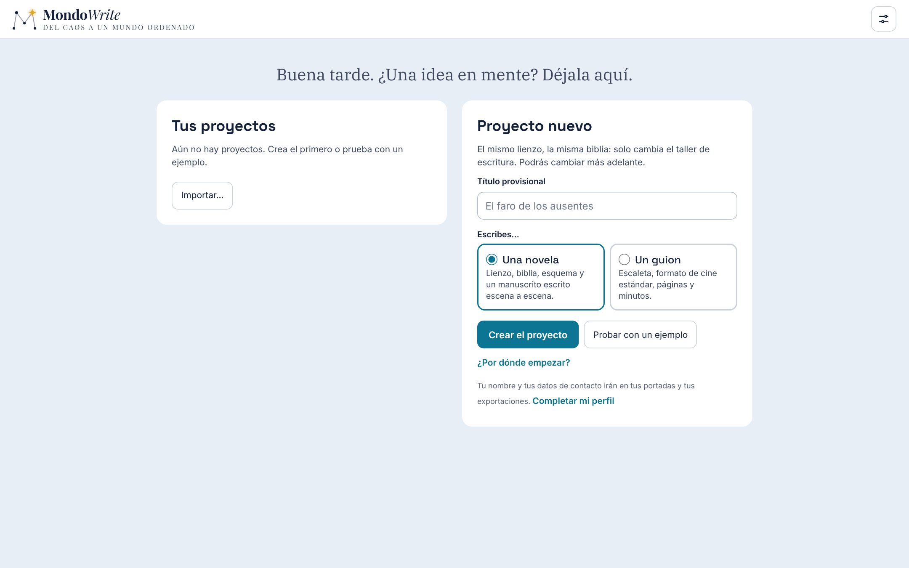
Rellena de una vez por todas la ventana Tú, el autor, que se abre con Editar mi perfil… en los Ajustes (y, mientras tu perfil esté vacío, con Completar mi perfil bajo Proyecto nuevo): nombre, apellidos, seudónimo (opcional: el nombre con el que firmas tu obra, si no es el tuyo), correo electrónico, teléfono, dirección y, si quieres, tu Trayectoria y tu Filmografía o publicaciones (una obra por línea). Estos datos se quedan en tu dispositivo, nunca en un proyecto. Sirven para:
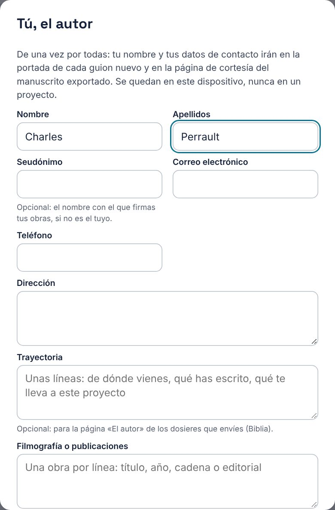
Los Ajustes muestran luego tu nombre de autor; Editar mi perfil… vuelve a abrir la ventana, tanto desde la página de los proyectos como desde un proyecto abierto. La ventana de exportación de la Biblia también lleva allí, para completar la página «Sobre el autor» de un documento.
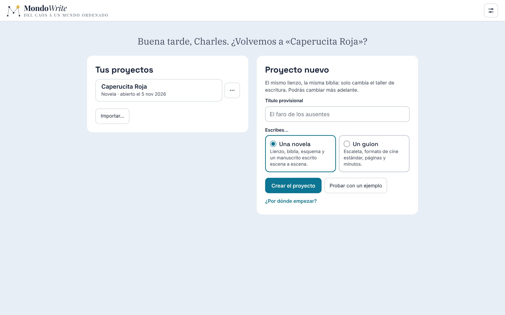
El último proyecto abierto tiene, al principio de la lista, un botón Retomar donde lo dejé: vuelve a abrir el proyecto en la vista donde lo dejaste y, en el Manuscrito o el Guion, en la misma escena, con el cursor en su sitio. Esa posición se queda en tu dispositivo (no se escribe en el proyecto): en otro dispositivo, el proyecto tiene la suya. En cuanto tienes seis proyectos o más, la lista gana un campo de búsqueda (título o nombre de la carpeta), un orden (Última apertura, Nombre, Tipo) y, si tienes novelas y guiones, un filtro Mostrar: Novelas o Guiones. El orden y el filtro se guardan para la próxima vez.
Si la carpeta elegida ya contiene un proyecto de MondoWrite, la app lo abre en lugar de sobrescribirlo. Crear nunca sobrescribe nada.
Haz clic en un proyecto de la lista para abrirlo. Si la apertura tarda (un proyecto de iCloud abierto por primera vez en el dispositivo, cuyos archivos siguen llegando), una ventana muestra cómo avanza. Abrir una carpeta… abre un proyecto que aún no está en la lista (copiado desde otra computadora, por ejemplo). El botón ⋯ junto a un proyecto propone Ocultar de la lista (no se toca ningún archivo; Proyectos ocultos lo hace volver) y, en rojo, Eliminar el proyecto…, que pide confirmación: sus archivos se borran, en todos tus dispositivos si está en iCloud. Expórtalo antes en .zip si quieres conservar una copia.
Probar con un ejemplo crea el proyecto Caperucita Roja sin preguntar nada (en iCloud o en tu carpeta en la nube si tienes una; si no, en Documentos › MondoWrite en una computadora): personajes, lugares, escenas relacionadas, un esquema en dos capítulos, el texto completo del cuento y tres grabados de Doré. Es la mejor manera de descubrir la app. Se abre una Visita guiada de seis pasos; sigue disponible en los Ajustes.
Grandes ejemplos, en la página de los proyectos, propone obras de dominio público más completas, ilustradas, con su biblia, su esquema y su texto: El conde de Montecristo (novela y serie) y El sabueso de los Baskerville (novela y largometraje), en francés y en inglés. Se descargan desde mondowrite.app (necesitas conexión): Descargar trae el proyecto, comprueba que es el anunciado y lo abre como un proyecto importado (en una computadora, eliges la carpeta donde guardarlo). Los ejemplos en otro idioma se pliegan bajo En otros idiomas.
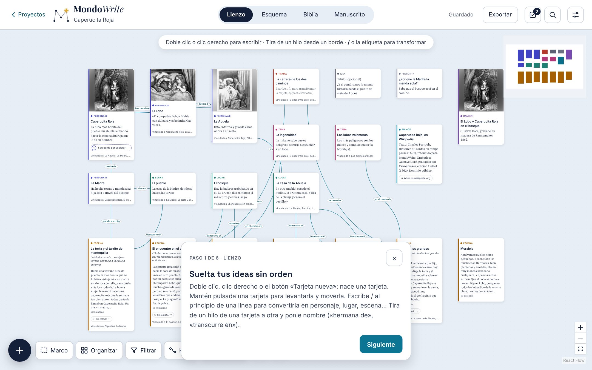
Importar…, en la página de los proyectos, crea un proyecto a partir de un archivo existente:
.docx), Markdown (.md) o texto (.txt): un proyecto de novela. Se reconocen los capítulos (títulos de Word, «Capítulo 3», números solos, saltos de página), los separadores como * * * dividen las escenas, y un título y un «por Fulano» al principio se convierten en el título del proyecto. Un prólogo o un epílogo de una sola escena se convierte en una página del libro..fountain) o Final Draft (.fdx): un proyecto de guion, con sus tarjetas Escena, Personaje y Localización. Un archivo de texto con al menos dos encabezados de escena (INT., EXT.) también se lee como un guion..pdf): un guion si contiene encabezados de escena; si no, una novela. En un guion, cada elemento se reconoce por su sangría (encabezado de escena, acción, personaje, acotación, diálogo, transición); se quitan los números de página y los (MORE) y (CONT’D) añadidos por el programa de origen, y una réplica cortada por un salto de página se vuelve a unir. En una novela, los párrafos se encuentran por la sangría de su primera línea, los títulos por su mayor tamaño, y se dejan aparte los titulillos, los números de página y las letras capitulares. Un PDF escaneado (imágenes, sin texto) no puede importarse. Relee el resultado: un PDF conserva la maquetación, no la estructura original..zip): un proyecto exportado con Exportar › Proyecto completo (.zip) vuelve a abrirse tal como estaba, imágenes y PDF incluidos..scriv, o comprimido en .zip): una novela, o un guion si está escrito en modo guion. En Mac, elige el .scriv; en Windows y Linux, el archivo .scrivx que contiene. Si el proyecto no puede leerse, comprímelo (clic derecho, Comprimir) y elige el .zip. Una ventana lista entonces las carpetas de la carpeta Binder: el Borrador (Draft) se importa siempre; desmarca las que no quieras.
* * * da varias escenas. Los comentarios y las notas al pie (del inspector o escritos en el texto) se quedan en su sitio; las imágenes del texto se convierten en tarjetas Imagen vinculadas a la escena.Una importación siempre va a una carpeta vacía: nunca sustituye a un proyecto existente.
Una vez abierto un proyecto, la barra superior reúne todo lo que usas en todas partes:
Nunca necesitas guardar: la app lo hace sola, menos de un segundo después de tu último cambio. Un clic en el estado del guardado, o Ctrl S, fuerza un guardado inmediato.
Cuando falta espacio (un iPad en horizontal), la barra se queda en una sola línea para dejar la altura a tu trabajo: Proyectos conserva solo su flecha, Exportar se convierte en un icono y el estado del guardado se reduce a un punto mientras no está guardado. Las vistas solo pasan bajo el logotipo si eso no basta, en vertical por ejemplo. La duración y las páginas de un guion están en la vista Guion.
No hay un orden correcto: toma MondoWrite por el extremo que te convenga. Aquí tienes siete recorridos, del más planificado al más libre. Elige el tuyo y deja lo demás de lado hasta que lo necesites.
Para cada recorrido, la tabla muestra las vistas que cuentan desde el principio (●) y las que te ayudarán más tarde (○).
| Recorrido | Lienzo | Biblia | Esquema | Manuscrito o Guion |
|---|---|---|---|---|
| El arquitecto | ● | ● | ● | ○ |
| El jardinero | ○ | ○ | ○ | ● |
| El proyecto en desarrollo | ○ | ● | ||
| El autor de series | ● | ● | ○ | ● |
| La reescritura | ○ | ○ | ● | ● |
| La novela documentada | ● | ● | ○ | ○ |
| El autor nómada | ● | ○ | ● |
Para quienes quieren conocer el final antes de la primera línea.
Al principio: la exportación de la Biblia.
Para quienes descubren su historia escribiéndola.
Las fichas que rellenar y el asistente de personaje: te servirán en la reescritura.
Para quienes tienen que convencer antes de escribir: una editorial, una productora, una comisión de ayudas.
El Esquema y el Manuscrito, hasta que firmes el contrato.
Para quienes ya tienen un manuscrito o un guion escritos en otro lugar.
Para una novela histórica, una investigación, un mundo por inventar.
El lienzo es una gran pizarra sin bordes. En él sueltas tarjetas, las unes con hilos, las agrupas en marcos. Es el lugar del caos fértil.
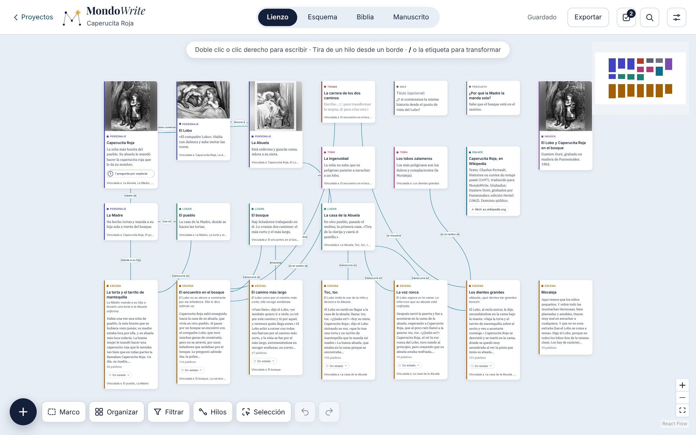
Para desplazarte, arrastra el fondo o desliza dos dedos sobre un trackpad (la rueda del ratón también sirve, con Mayús para ir de lado). Para hacer zoom, pellizca el trackpad o la pantalla, o mantén Ctrl mientras giras la rueda: el zoom funciona también sobre una tarjeta, incluso con los dos dedos encima. Una tarjeta cuyo texto se desplaza conserva el gesto mientras le quede texto por desplazar. Con un ratón, puedes recuperar el zoom con la rueda: en los Ajustes, en Rueda y trackpad (lienzo), elige Hacer zoom (como antes). Los botones +, − y el del marco, abajo a la derecha, acercan, alejan y muestran toda la pizarra. El minimapa, arriba a la derecha, muestra dónde estás; cada tipo de tarjeta tiene allí su color.
Hay cuatro maneras de crear una tarjeta, para el ratón, el dedo y el teclado:
La tarjeta nace donde has hecho clic, nunca encima de otra. El cursor está en su título; Intro pasa al texto de la tarjeta.
La flecha a la derecha de Tarjeta nueva abre la lista de todos los tipos: una tarjeta vacía, un personaje, un lugar, una escena, una trama, un grupo, un objeto, un acontecimiento, una regla, un secreto, un tema, una pregunta, una imagen (foto libre o imagen del dispositivo), un enlace o un documento PDF.
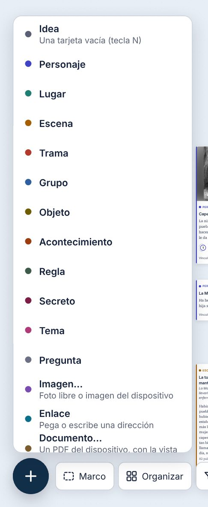
| Tipo | Lo que representa |
|---|---|
| Idea | El tipo de partida: una nota suelta, que se convertirá en otra cosa o seguirá siendo una idea. |
| Personaje | Una persona de la historia, con su ficha, su motor y su arco en la Biblia. |
| Lugar (Localización en un guion) | Un escenario, con su época, su ambiente, lo que ocurre en él. |
| Escena | Una escena del relato. Su texto es el del Manuscrito o del Guion. |
| Trama | Una línea argumental (principal, secundaria, romántica…) con su pregunta dramática. |
| Grupo | Una familia, un clan, una empresa, una banda: lo que quiere, cómo funciona, sus medios. Sus miembros son los personajes unidos a él por un hilo. |
| Objeto | Una cosa que cuenta en la historia: de dónde viene, para qué sirve, lo que simboliza, dónde está. |
| Acontecimiento | Algo que ocurrió, a menudo antes del relato: cuándo, lo que cambió, lo que se cuenta de ello. |
| Regla | Una regla del mundo (una magia, una ley, una costumbre): a qué se aplica, sus excepciones, lo que cuesta, lo que le pasa a quien la infringe. |
| Secreto | Lo que algunos ocultan: la verdad, lo que está en juego, las pistas sembradas, cuándo y cómo estalla. Quienes lo saben son los personajes unidos a él por un hilo. |
| Tema | Una idea que atraviesa la historia. |
| Pregunta | Algo que explorar más tarde. Las preguntas se reúnen en «Por explorar». |
| Imagen, Enlace, Documento | Tus fuentes: una imagen, una página web, un PDF, con autor y fecha. |
Escribe / al principio de una línea del texto de la tarjeta (o en un título vacío): se abre el menú Convertir en…. Elige con las flechas e Intro, o con el ratón. Con el dedo o el ratón, también puedes tocar la etiqueta del tipo, arriba a la izquierda de la tarjeta. Cambiar el tipo no pierde nada: el texto y los hilos se quedan.
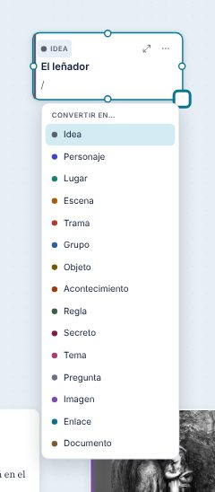
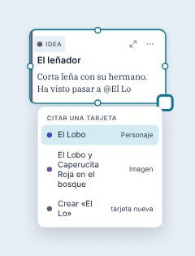
El texto de una tarjeta se formatea como en un procesador de textos ligero. Selecciona un pasaje: una pequeña barra propone negrita, cursiva, tachado, título, lista, casilla, cita y Por revisar (un resaltado para los pasajes que retomar). También puedes escribir en Markdown, que se convierte en formato a medida que escribes: **negrita**, *cursiva*, # Título, - lista, [ ] para una casilla. Un texto en Markdown pegado se formatea igual. En el texto de una escena (el Manuscrito, la tarjeta Escena ampliada), una raya al principio de línea sigue siendo una raya de diálogo: empieza allí una lista con * .
Una tarjeta cuyo texto supera cierta altura se pliega, con Más detalles para desplegarla; se queda abierta mientras escribes.
Escribe @ (o [[, como en Obsidian) seguido del principio de un nombre: aparece la lista de las tarjetas del proyecto. Elige una: su nombre se inserta como mención, y se tira solo un hilo entre las dos tarjetas. Si la tarjeta aún no existe, Crear «…» la crea al momento. También funciona en el texto de una ficha de la Biblia y en una tarjeta ampliada.
Una mención sigue a su tarjeta: si renombras la tarjeta, el nombre cambia allí donde se la menciona; si la eliminas, la mención vuelve a ser texto normal.
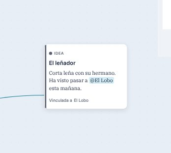
Pasa el puntero por encima de una tarjeta: aparece un punto en el centro de cada borde. Arrastra desde uno de ellos hasta otra tarjeta (a cualquier parte de la tarjeta): un hilo las une. Haz clic en el hilo para darle una etiqueta, la naturaleza del vínculo: «madre de», «transcurre en», «sospecha de»… Estas etiquetas vuelven a aparecer en la Biblia (Vinculada a) y en el mapa de relaciones. Para quitar un hilo, haz clic en él y luego en Desvincular.
Un hilo también tiene su ficha. En la Biblia, toca una tarjeta bajo Vinculada a: se abren tres casillas bajo la lista, Su historia, Lo que está en juego entre ellos y Cómo evoluciona. Un punto señala los hilos que tienen ficha. Lo que está en juego entre dos personajes acompaña a su relación en el dosier de presentación. Para quitar el hilo, usa Desvincular de «…» al pie de esa ficha.
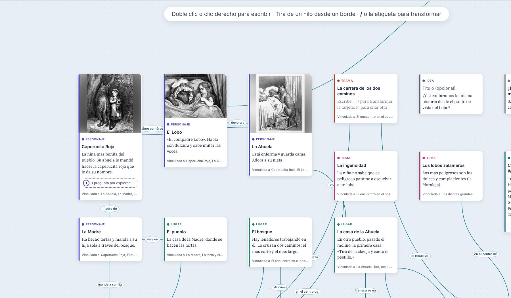
Al pie de cada tarjeta vinculada, una línea discreta dice a qué está vinculada: Vinculada a El Lobo, La Abuela… Toca esa línea para desplegarla y luego un nombre: el lienzo se centra en esa tarjeta y la destaca.
Cuando los hilos se cruzan demasiado, el botón Hilos (abajo, junto a Filtrar) los oculta todos. No se elimina nada, y la elección se guarda con el proyecto. Las tarjetas dicen entonces con todas las letras a qué están vinculadas; toca Vinculada a en una tarjeta para mostrar solo sus hilos, vuelve a tocar para ocultarlos. Hilos otra vez los hace volver todos.
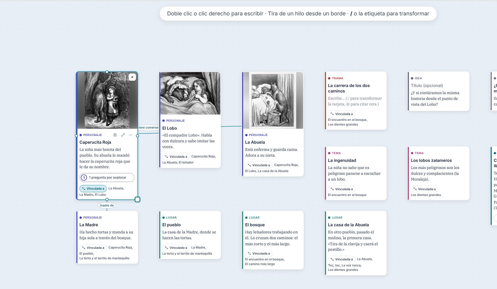
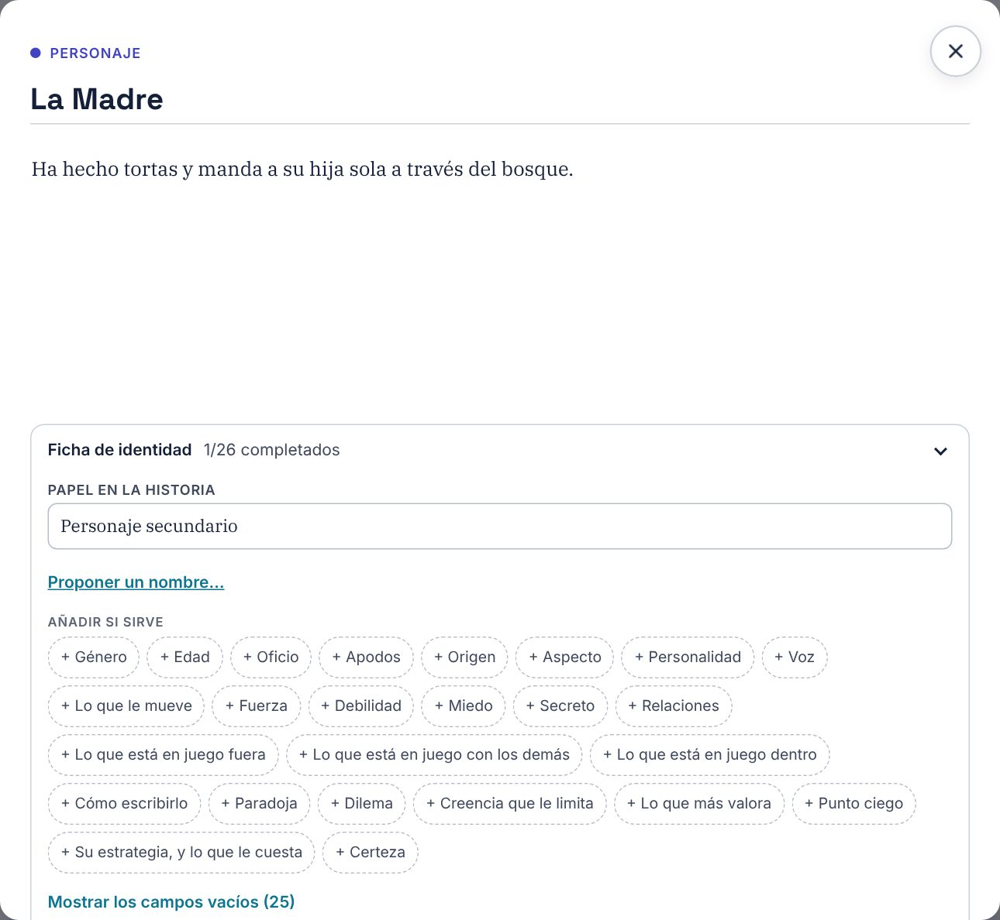
El botón ⋯ (o un clic derecho fuera del texto de la tarjeta) propone:
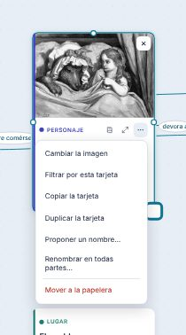
El botón de la ficha (la pequeña página) de una tarjeta con tipo abre su ficha en la Biblia.
El lienzo también tiene tus fuentes a mano:
.md o .txt soltado se convierte en una tarjeta (una nota de Obsidian conserva su título y su tipo).Pegado sobre una tarjeta (haz clic en su borde y luego Ctrl V), el texto va a esa tarjeta, al final: a sus notas, o al texto de la escena en una tarjeta Escena. No se crea ninguna tarjeta.
Selecciona una o varias tarjetas y luego Ctrl C y Ctrl V: las copias llegan donde está el puntero, con su ficha, sus imágenes, el texto de las escenas y los hilos entre ellas. Ctrl D, o Duplicar la tarjeta en el menú ⋯, pone una copia justo al lado. En otra app, pegar da el título y el texto de las tarjetas.
Una tarjeta que cambia de tipo no pierde nada: una Escena convertida en Idea conserva su sinopsis y su texto en sus notas, y un texto largo en una tarjeta que se convierte en Escena pasa a ser el texto de la escena (una línea corta se convierte en su sinopsis).
Imagen abre la ventana Fotos libres: busca una palabra («faro, tormenta, bosque de noche…») y elige una foto. Tres fuentes: Openverse, sin clave, que reúne imágenes con licencia libre (Flickr, Wikimedia, museos); Pixabay y Unsplash, que piden una clave gratuita, guardada en tu dispositivo. El autor, la página y la licencia de la foto quedan anotados en la ficha de la tarjeta. Elegir una imagen del dispositivo… toma un archivo de tu computadora.
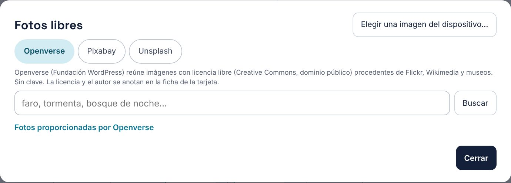
Un marco agrupa tarjetas sin imponerles nada: «La familia», «Acto I», «Investigación». Selecciona tarjetas y pulsa C (o el botón Marco): el marco las rodea. Ponle nombre en su cabecera. Mover el marco (por su cabecera, o con una pulsación larga en un sitio vacío de su interior, con el dedo o el ratón) mueve las tarjetas que contiene; arrastra sus bordes para cambiar su tamaño. Eliminar un marco no elimina sus tarjetas.
Sin tarjetas seleccionadas, C pone un marco vacío en un espacio libre cerca del centro de la vista. Una tarjeta nueva nunca cae a caballo sobre un marco: creada en un marco (doble clic, clic derecho), se queda en él, junto a sus tarjetas; creada en otra parte, va a un espacio vacío.
El candado de la cabecera bloquea el marco: ni él ni sus tarjetas se mueven ya, ni siquiera con Organizar. Las tarjetas siguen siendo editables, enlazables y eliminables.
Los marcos tienen una jerarquía: un marco colocado dentro de otro tiene un título más pequeño y un contorno de puntos. Un marco dentro de un marco de primer nivel (un capítulo en una casilla, una casilla en un marco «Acto I» que tú has dibujado) baja un nivel, sin nada que configurar. Las casillas de una plantilla de estructura tienen el título más grande, un contorno de color y su posición junto al nombre («Casilla 3 de 15»). Al alejarte, los títulos crecen y pasan por encima de las tarjetas: de lejos, el lienzo se lee como un índice. El título de un capítulo se coloca entonces bajo el de su casilla en lugar de taparlo. De cerca o de lejos, los títulos de los marcos quedan delante: los hilos y sus etiquetas pasan por debajo.
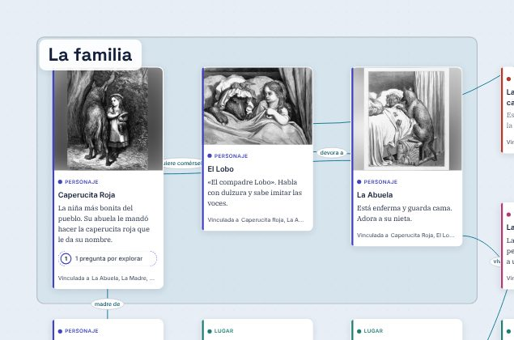
Con el ratón: Mayús + arrastrar rodea tarjetas; Ctrl + clic añade una tarjeta a la selección; Ctrl A lo selecciona todo, Esc deselecciona. Con el dedo: el botón Selección hace que arrastrar rodee las tarjetas en lugar de mover la vista. Una barra en la parte superior propone entonces Enmarcar, Papelera y Deseleccionar; las tarjetas elegidas se mueven juntas.
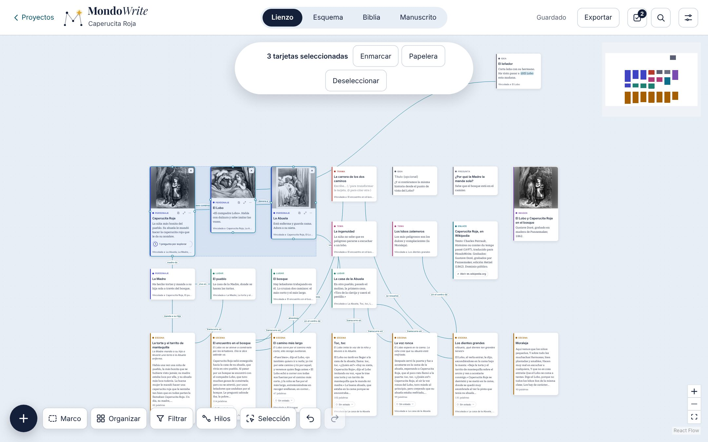
Cuando todo se desborda, Organizar pone cada tarjeta en un marco: personajes, lugares, tramas, temas, preguntas, imágenes, enlaces, ideas sueltas, y las escenas por casilla de la plantilla y por capítulo, unidas en el orden del relato por hilos «luego». El conjunto forma un bloque compacto, con la forma de la pantalla: cuantas más tarjetas hay, más largas son las filas de escenas, y los marcos se alinean en ese ancho en lugar de estirarse en una larga franja. Un capítulo repartido en varias casillas lleva su título en la primera y «(continuación)» en las demás. Los marcos bloqueados se quedan en su sitio. Un solo deshacer (Ctrl Z) lo devuelve todo a su lugar.
En una serie, las escenas se ordenan por temporada y por episodio: un gran marco por temporada, un marco por episodio dentro («Ep. 3 · Tormenta»), con sus escenas dentro. Estos marcos aparecen solos en cuanto creas temporadas y episodios en la escaleta, incluso antes de la primera escena (si el lienzo aún no tiene ningún marco tuyo), y luego siguen cada cambio. Las escenas escritas antes del primer episodio van a Fuera de episodio; las tarjetas Escena todavía no escritas en el guion, a Por colocar. Suelta una escena en el marco de otro episodio: pasa allí con todo su texto, donde la has puesto, y el lienzo se ordena de nuevo. Sin arrastrar, Colocar en en la escaleta hace lo mismo.
Cada casilla de la plantilla tiene su marco, incluso vacío («Aún no hay nada aquí»): los huecos de la estructura saltan a la vista. Suelta una escena en el marco de una casilla para colocarla en esa casilla, en el sitio donde la sueltes (sujeta la tarjeta por su cabecera); el Esquema, la escaleta y el Manuscrito siguen enseguida. En un guion, las casillas son las de la plantilla elegida en la escaleta.
A partir de ahí, el lienzo sigue solo al relato: mover una escena o un capítulo en el Esquema, el Manuscrito o la lista de escenas del Guion la mueve también en el lienzo, sin volver a Organizar. Un lienzo organizado se organiza de nuevo; si no, las escenas solo intercambian sus sitios y nada más se mueve.
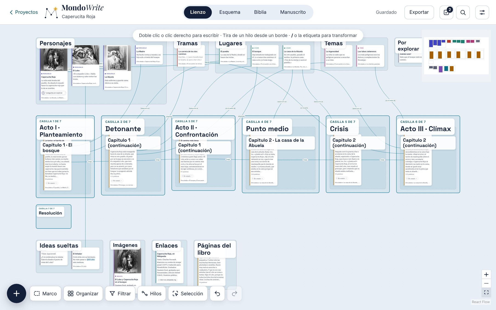
Filtrar oculta tipos de tarjetas (no se elimina nada): desmarca los tipos que ya no quieres ver. Un aviso «Filtro activo» te lo recuerda arriba (en un teléfono, el embudo del botón se rellena en su lugar); Mostrar todo lo hace volver todo, y Ocultar todo desmarca todos los tipos a la vez (útil para quedarte con uno o dos).
La lupa (Ctrl F) busca en los títulos y el texto de las tarjetas, sin distinguir mayúsculas ni acentos, y también en el texto de las escenas («en el texto»). Elige un resultado: el lienzo se centra en la tarjeta y se acerca (al 100 %, nunca más lejos) y la destaca (las demás se atenúan; Esc o un clic en el fondo lo devuelve todo), o la escena se abre en el Manuscrito.
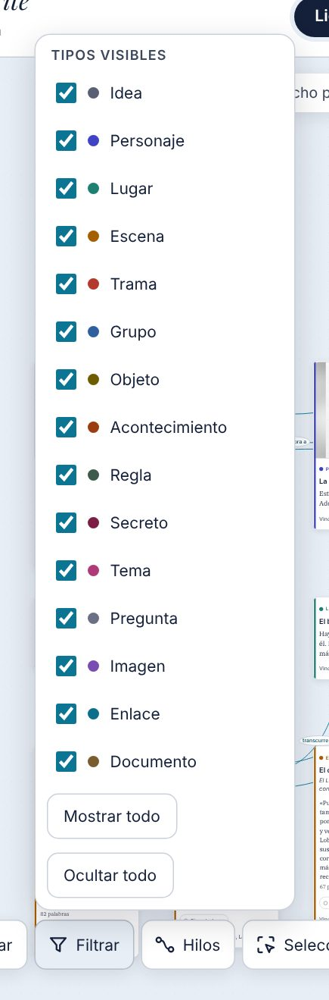
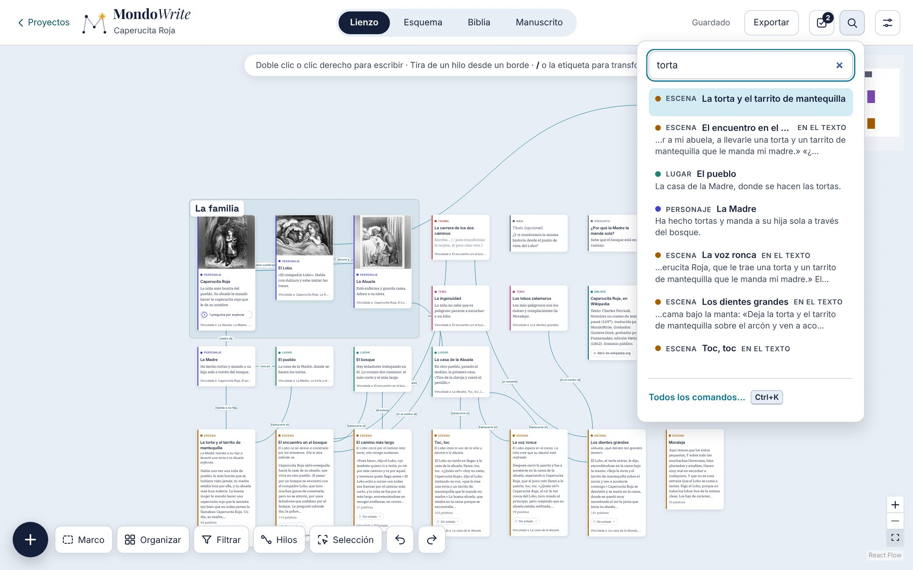
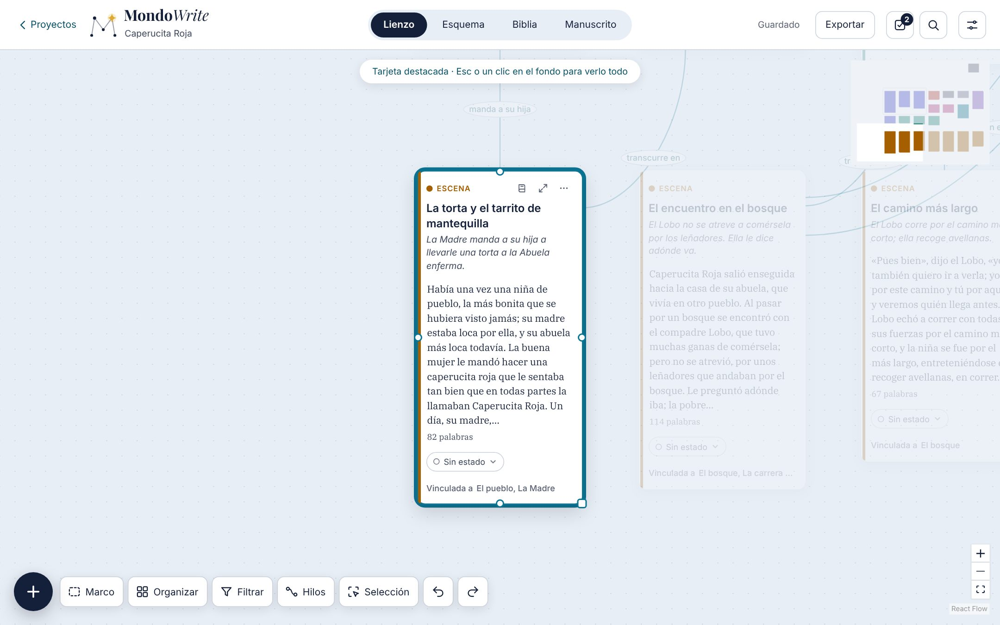
Deshacer y Rehacer (abajo, o Ctrl Z y Ctrl Mayús Z) deshacen y rehacen los cambios del lienzo, del esquema y de la papelera. Dentro de un texto, estos atajos deshacen lo escrito.
Eliminar una tarjeta (Mover a la papelera, en rojo al final de su menú ⋯, o Supr) la lleva a la papelera, con su sitio y sus hilos. Un mensaje propone enseguida Deshacer. La papelera se abre desde los Ajustes, pestaña Este proyecto (Papelera (n)), o en un Mac desde Archivo › Papelera…: Recuperar devuelve la tarjeta, Eliminar la borra para siempre. El texto de una escena nunca se pierde con su tarjeta.
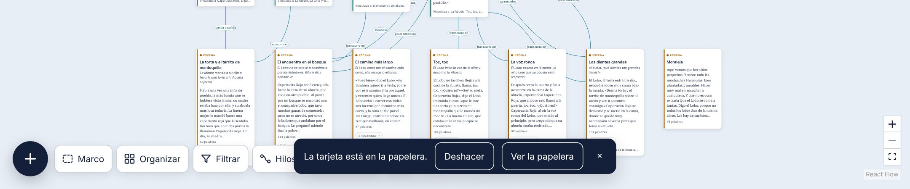
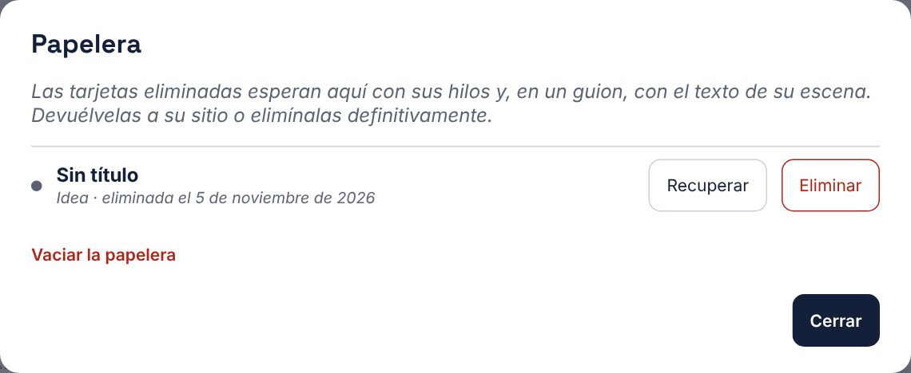
El botón Pendientes (Ctrl Mayús L) reúne todo lo que espera: las casillas sin marcar de tus tarjetas, los pasajes marcados Por revisar en el manuscrito y las preguntas Por explorar (preguntas guardadas en la ficha de un personaje y tarjetas Pregunta). Una tarea se queda donde la pusiste: marcarla en el panel la marca en su tarjeta.
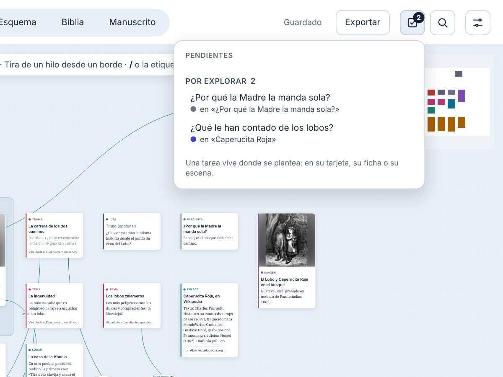
La Biblia reúne las fichas de tu mundo. Se construye sola: cada tarjeta con tipo del lienzo tiene en ella su ficha, ordenada por tipo. No se copia nada: editar una ficha edita la tarjeta.
A la izquierda, el índice ordena las secciones en cinco partes numeradas, en el orden de un dosier: 1 · Presentación (el proyecto, los temas), 2 · Personajes, 3 · Universo (los lugares), 4 · Estructura (tramas y escenas) y, aparte, 5 · Para ti (preguntas por explorar, imágenes, enlaces, documentos, ideas sueltas): lo que es solo para ti, nunca impreso en un dosier que envías. Cada sección muestra su número de fichas; un clic te lleva a ella. El botón + de cada sección crea allí una ficha (y por tanto una tarjeta en el lienzo). Cada ficha se pliega con su flecha, arriba a la derecha, para mostrar solo su título; Contraer todo y Desplegar todo hacen lo mismo con toda la sección. El dispositivo lo recuerda de una sesión a otra, y una ficha abierta desde el lienzo se despliega sola. Elegir y ordenar las secciones permite ocultar secciones y cambiar su orden dentro de su parte, con las flechas; este ajuste se aplica también a la exportación de la Biblia en Word y en Markdown.
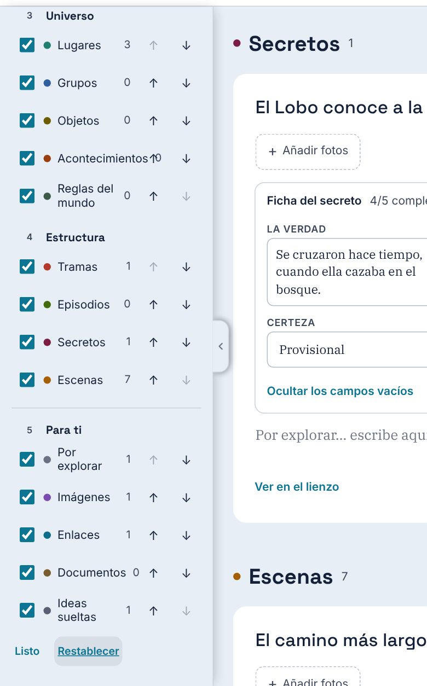
La Biblia se abre en la portada: la tarjeta de identidad de tu libro, útil para presentarlo a una editorial, un agente o una productora.
Hazme preguntas, arriba a la derecha de la portada, hace una pregunta a la vez por cada campo vacío («¿Quién quiere qué, qué se lo impide y qué está en juego?» para la logline). Tu respuesta va tal cual al campo, con Añadir; Otra pasa a la pregunta siguiente. Como el asistente de personaje, nunca responde por ti.
En un guion, la portada sigue a la etiqueta Formato: mientras no se elige, no adivina nada y te invita a elegirlo. Para una serie, tiene además una parte que se pliega, Escribir la serie, para todo lo que ayuda a una productora a creer en ella y a un guionista a sumarse: Por qué ahora, Por qué yo, La promesa (lo que el público vuelve a buscar, episodio tras episodio), Lo que no es, El universo, Antes del piloto (lo que pasó antes del primer episodio), Lo que los mantiene unidos (por qué tus personajes no pueden marcharse), La mecánica (el conflicto central que genera los episodios), Un episodio tipo, La pregunta de la temporada, Dónde termina la temporada, Las temporadas siguientes, Qué hacer, Qué evitar, Ideas para seguir y Otros soportes (pódcast, novela gráfica, juego: solo se imprime en un documento que envías). Dos etiquetas más bajo el título: Forma (episódica, serializada, híbrida) y Piloto (piloto de premisa o piloto tipo).
Para una miniserie, las mismas secciones, sin las temporadas siguientes: la pregunta y el final abarcan toda la miniserie.
Para una película (largometraje, cortometraje, telefilme), la parte se llama Escribir la película: Por qué ahora, Por qué yo, Lo que no es, Nota de dirección (cómo la ves: imagen, sonido, ritmo), Viabilidad, Qué hacer, Qué evitar e Ideas que conservar. El Tratamiento (toda la película contada en 5 a 10 páginas) es opcional: Añadir un tratamiento lo muestra. La viabilidad llega ya rellenada a partir del guion (escenas, páginas, localizaciones, interior y exterior, día y noche, papeles con diálogo, localizaciones principales): cámbiala y complétala (época, efectos, escenas de acción); Volver a tomar las cifras del guion la recalcula. Una película no tiene episodios ni etiquetas Forma o Piloto. Una sección ya rellenada que no corresponde al formato elegido pasa a Otras secciones: no se pierde nada.
Los episodios viven en la escaleta, temporada a temporada; la portada dice cuántos hay y te lleva allí (Ver los episodios, Episodio nuevo). En la Biblia, la sección Episodios (Estructura) los lista con su temporada: cambia un título allí mismo, escribe la sinopsis, o Escribir el episodio para abrirlo en la vista Guion. + Temporada nueva y + Episodio nuevo en esta temporada también están ahí. La exportación de la biblia de la serie lee esos episodios: su lista, sus tramas y personajes (los de las escenas del episodio, por los hilos y las réplicas) y el cuadro de las tramas.
Bajo la nota de intenciones, una indicación discreta da su extensión: una página tiene unas 450 palabras.
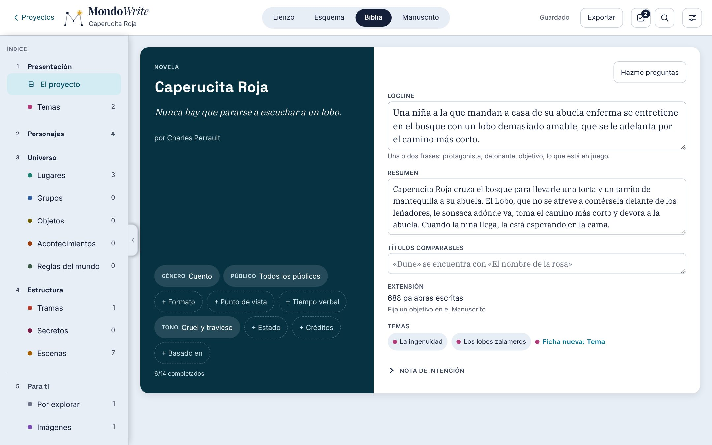
Cada personaje tiene una ficha que va al grano:
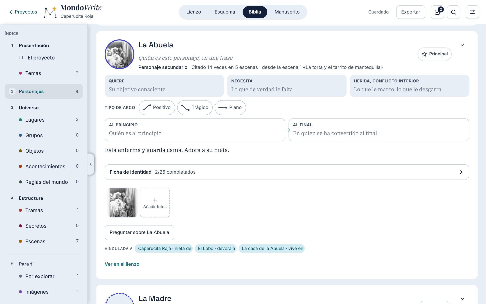
Para un personaje, Proponer un nombre… (menú ⋯ de la tarjeta, final de su ficha, o al escribir un nombre nuevo en el guion) abre una ventana: elige un País, lo que buscas (un nombre y un apellido, un nombre, un apellido) y el Género, y un clic en un nombre se lo da a la tarjeta; Otros saca nuevos. Las listas se incluyen con la app (sin conexión). Para Francia y Estados Unidos vienen de registros oficiales (INSEE; Social Security Administration y Census): el sorteo sigue la frecuencia de cada nombre, y Nacido en los años elige la década de nacimiento (rellenada con la edad de la ficha, a fecha de hoy; en una historia de época, elige la década a mano). Los demás países usan listas sin época ni frecuencia: el sorteo solo tiene en cuenta el país y el género. No se propone un nombre o apellido que ya lleva una tarjeta del proyecto.
Preguntar sobre … abre el asistente, que te ayuda a profundizar en un personaje haciéndote preguntas, una a una. Nunca responde por ti.
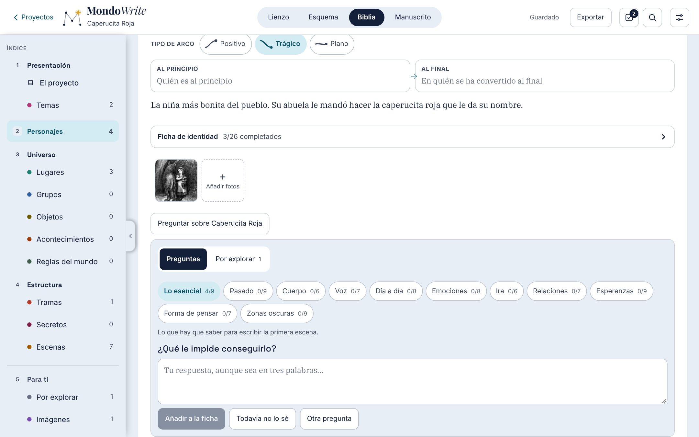
En la sección Personajes, la pestaña Relaciones dibuja a los personajes y los hilos que los unen en el lienzo, con sus etiquetas, y luego la lista de las relaciones. Tira de un hilo entre dos personajes y ponle nombre («hermana de», «traiciona a»): aparece aquí. Toca un retrato para abrir su ficha.
Un hilo se engrosa con el número de escenas que comparten los dos personajes, y la lista lo dice con todas las letras («3 escenas juntos»). Un hilo de puntos une a dos personajes que nunca comparten escena: una relación que el relato todavía no muestra.
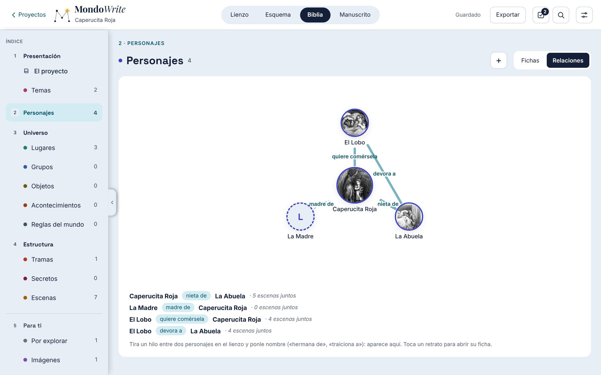
Bajo el nombre de cada personaje, una línea discreta da sus escenas (y, en un guion, sus réplicas y su parte del tiempo de palabra); bajo el nombre de cada lugar, sus escenas (y para una localización, sus páginas, interior o exterior, día o noche). Todo se lee en tu texto. El detalle, la ordenación y la exportación en CSV están en la ventana Estadísticas, que se abre desde el Manuscrito o el Guion (ver «Las estadísticas del proyecto»).
Cada tipo tiene su ficha, plegada bajo el texto:
Todas las fichas, salvo la de una escena, tienen una casilla Certeza: Establecido, Provisional o Por explorar. Te dice sobre qué puedes construir; nunca aparece en un documento que envías.
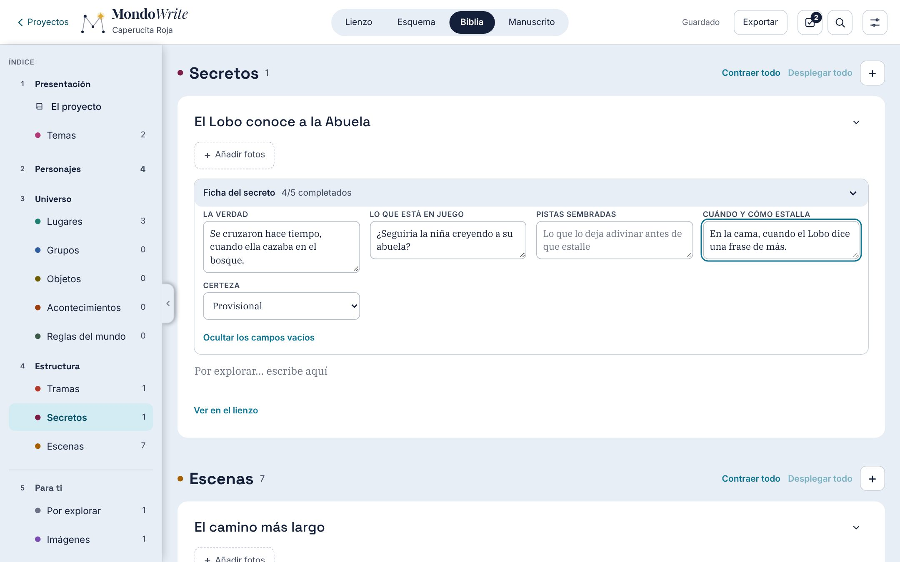
Las preguntas Por explorar y las ideas sueltas también tienen sus secciones. Ver en el lienzo, al pie de cada ficha, muestra su tarjeta destacada: las demás se atenúan hasta que haces clic en el fondo o pulsas Esc.
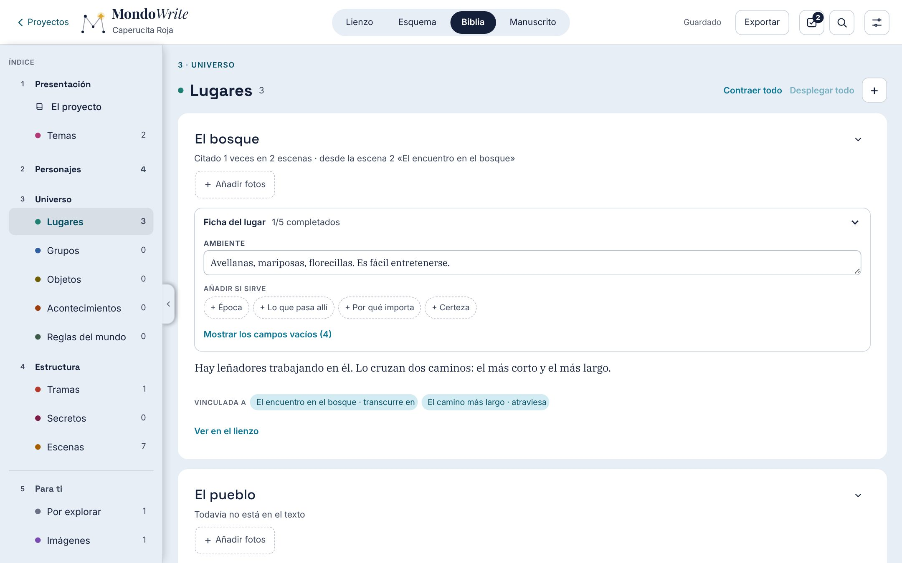
El Esquema da forma al relato: el orden de las escenas, su lugar en una estructura, sus capítulos. Solo contiene escenas: las del lienzo, de la Biblia o del Manuscrito, siempre las mismas.
El menú Plantilla propone una estructura, con una frase que la explica:
Cada casilla tiene un nombre, una ayuda y un lugar habitual en el relato, que muestra la cinta del relato (ver el Manuscrito). Cambiar de plantilla no pierde ninguna colocación: cada plantilla conserva la suya. Cada casilla se abre con su posición («Casilla 3 de 15»), un título grande y su número de escenas; los capítulos vienen debajo, más pequeños, como en el lienzo.
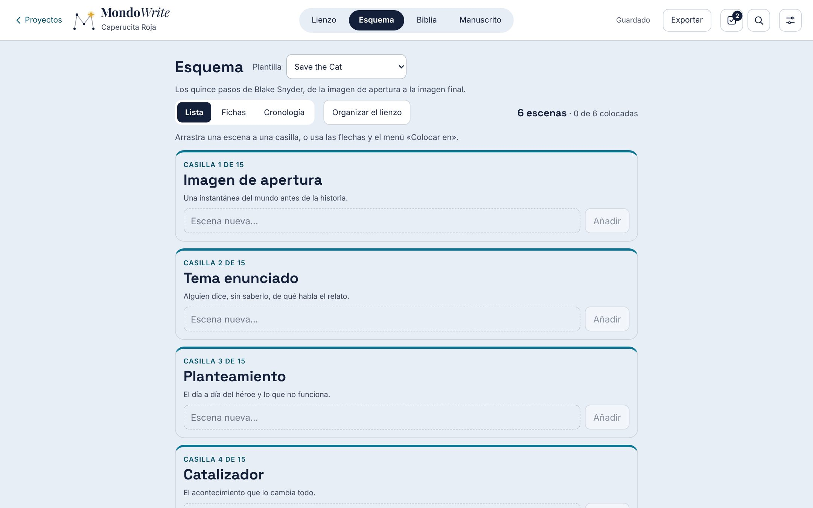
El Círculo de Dan Harmon también se dibuja en círculo: el mundo conocido arriba, lo desconocido abajo, y el número de escenas de cada paso. Un paso vacío aparece con trazo discontinuo; toca un paso para ir a su casilla.
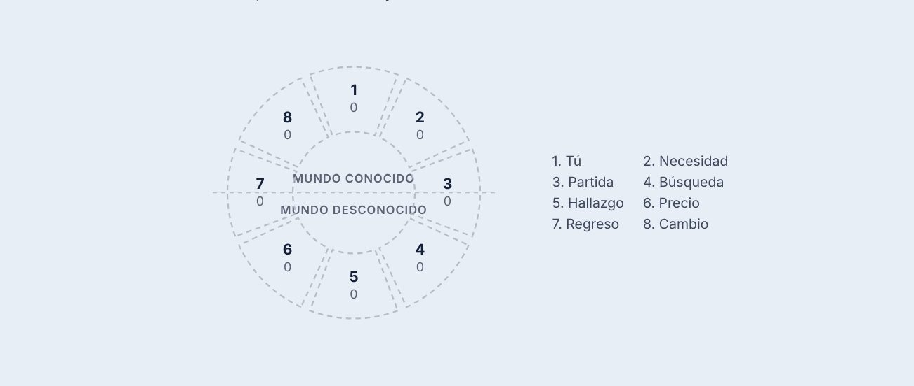
En el menú Plantilla, Crear una plantilla… abre la lista de casillas, rellenada con las de la plantilla actual: renómbralas, escribe lo que va en ellas, cambia su orden, quita algunas, añade otras. Las escenas siguen a su casilla, aunque se renombre. Conservar en mis plantillas la propone luego en todos tus proyectos, novela o guion; Editar las casillas… la vuelve a abrir más tarde. Una casilla quitada envía sus escenas a «Por colocar» (en un guion, a la casilla anterior).
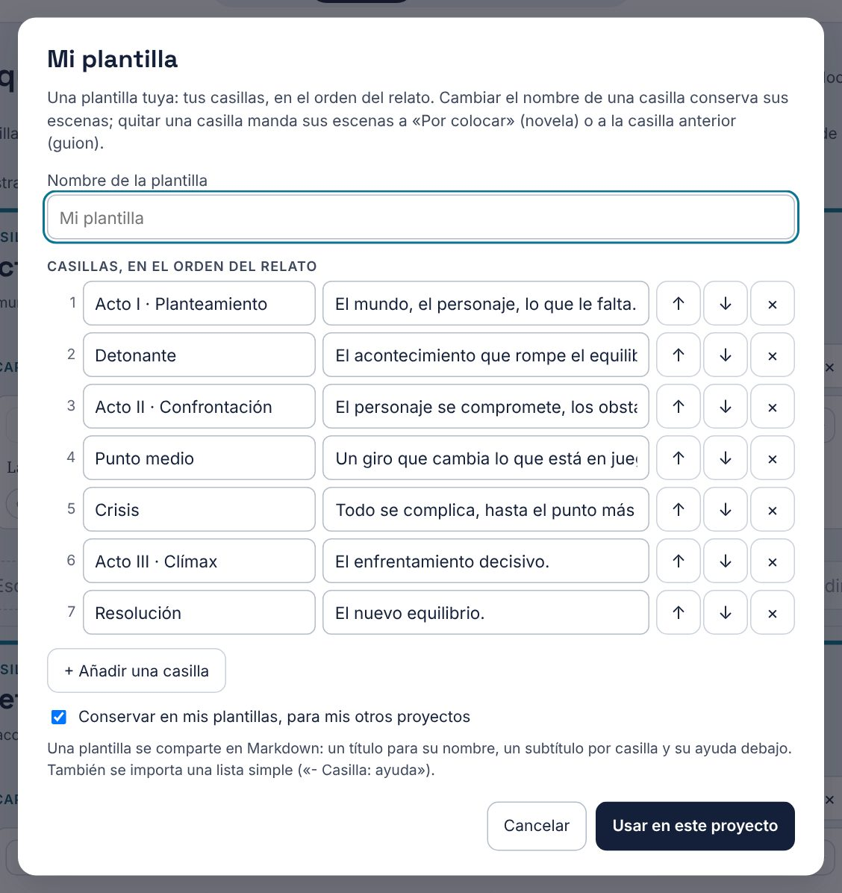
Para compartir una plantilla (con un coautor, entre dos dispositivos, o a partir de una estructura encontrada en otra parte): Exportar esta plantilla…, en el mismo menú, la guarda en un archivo Markdown (el nombre de la plantilla como título, cada casilla como un subtítulo, su ayuda debajo), legible en cualquier editor de texto; para una plantilla guardada, Gestionar mis plantillas… (mismo menú) abre su lista: el botón ⋯ de cada una propone Exportar… y, en rojo, Quitar de mis plantillas (Deshacer la recupera mientras se muestra el mensaje). Quitar una plantilla no cambia ningún proyecto que ya la use. Importar una plantilla… lee un archivo así, pero también una simple lista («- Casilla: ayuda», una casilla por línea) o un archivo JSON, y abre el editor ya rellenado: comprueba las casillas y luego Usar en este proyecto. No entra nada en el proyecto antes de ese clic.
En la presentación Lista, cada escena muestra su título, su sinopsis y luego, en una línea, su capítulo, su casilla (Colocar en) y su estado. Para moverla:
Las escenas todavía no colocadas esperan en Por colocar, en el orden del lienzo. Escena nueva… al final de cada casilla crea una escena allí mismo (y su tarjeta en el lienzo). El lápiz (✎) abre la escena en el Manuscrito; el botón ⋯ propone Ver en el lienzo y, en rojo, Mover a la papelera.
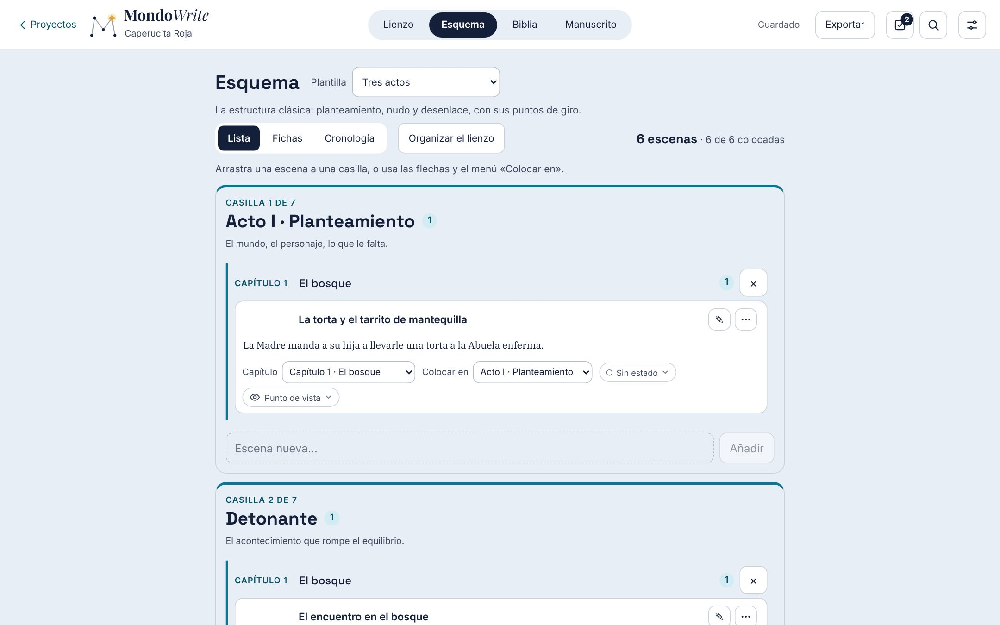
Los capítulos dividen el relato. El menú Capítulo de una escena propone Capítulo nuevo a partir de aquí; cada capítulo puede tener un título (opcional). Los capítulos se numeran solos, según su lugar. Eliminar un capítulo devuelve sus escenas al capítulo anterior: no se elimina ninguna escena. En el Manuscrito, también puedes empezar un capítulo desde el teclado (ver más abajo).
Tres presentaciones del mismo esquema:
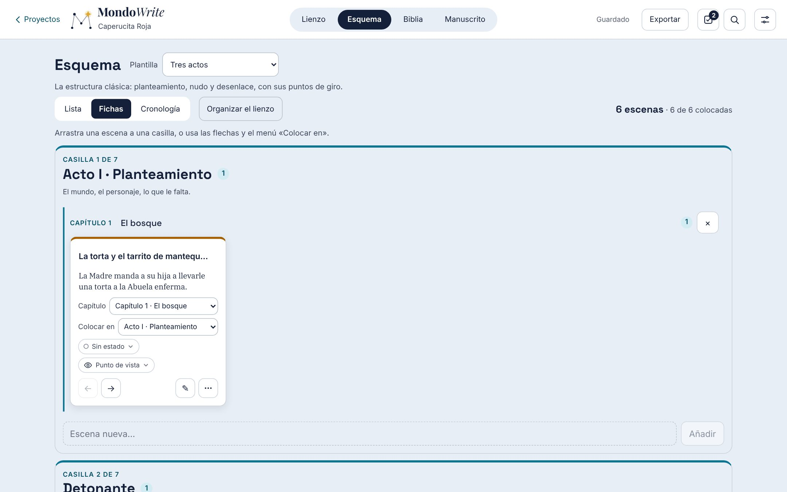
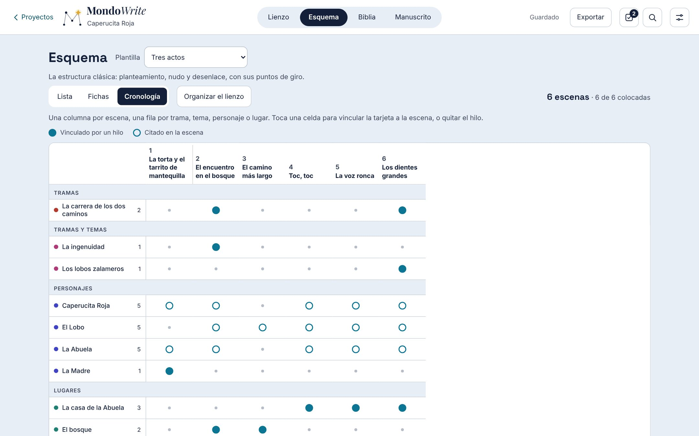
Organizar el lienzo ordena también el lienzo a partir del esquema: una casilla de la plantilla y luego un capítulo por marco.
El Manuscrito es donde escribes: todo el libro, escena tras escena en el orden del esquema, en páginas maquetadas como las de un libro. Las escenas se suceden sin corte, y lo que escribes va a la escena donde está el cursor.
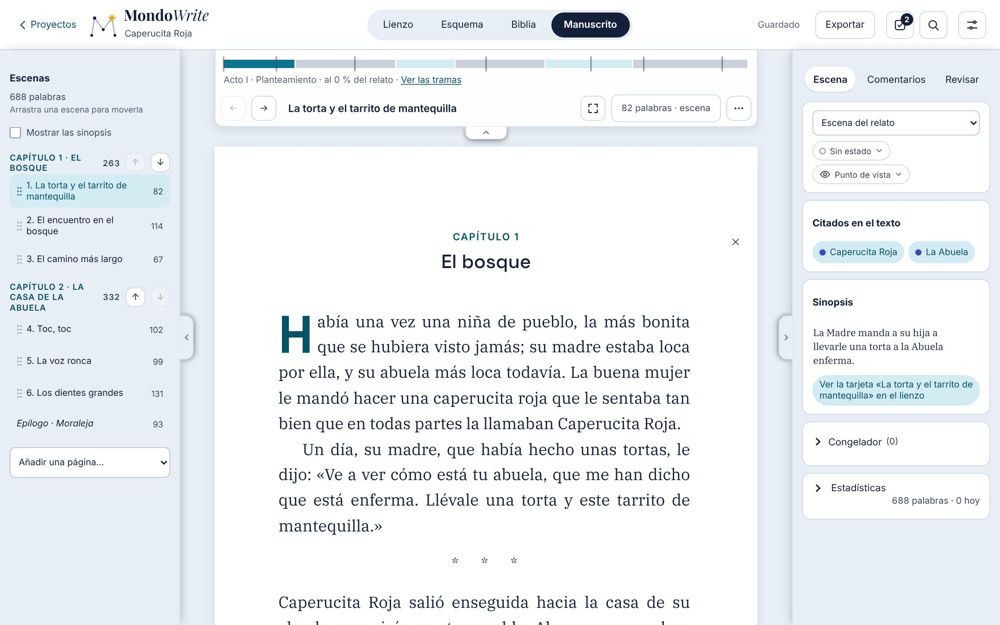
Una vez elegida una plantilla, una banda fina en la parte superior de la barra (y bajo la barra del Guion) muestra la estructura de tu texto tal como es: cada casilla ocupa el sitio que ocupan de verdad sus escenas, en palabras (en páginas en un guion). Una marca fina indica dónde suele empezar cada casilla en esa estructura: la diferencia se ve sin que se imponga nada. Toca una escena en la cinta para ir a ella; la línea de debajo dice en qué casilla estás y en qué punto del relato. Mientras hay poco escrito, cada escena cuenta como una parte igual.
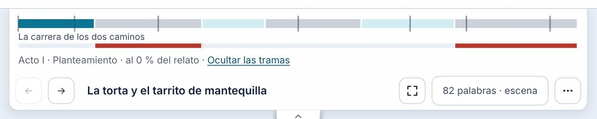
A la izquierda, todas las escenas del libro, por capítulo, con su número de palabras. Un clic abre una escena. Para moverla, arrástrala (sobre la mitad superior de otra escena para ponerla antes, sobre la mitad inferior para ponerla después), o usa sus flechas o Alt ↑ ↓. Toma el capítulo y la casilla de su nueva vecina. Un capítulo entero también se mueve, arrastrando su título o con sus flechas.
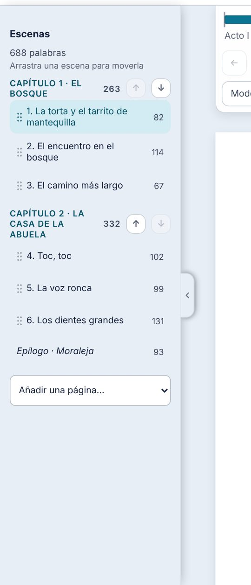
Encima de la página, una barra discreta: las flechas de las escenas, el título de la escena, su tipo de página, su estado, Modo concentración, Escuchar, el contador de palabras y un botón ⋯ para lo demás: Reemplazar, Ir a…, Revisar, Estadísticas y, en rojo, Mover a la papelera. El número y el título del capítulo están en el margen superior; la primera letra de un capítulo se convierte en letra capitular cuando no estás escribiendo en ese párrafo. La sinopsis de la escena aparece como marca de agua en una escena todavía vacía, como una nota de esquema.
Tipo de letra e interlineado. Ajustes › Escritura ofrece varios tipos de letra para la página (IBM Plex Serif por defecto, Literata, EB Garamond, Atkinson Hyperlegible, muy legible, y Courier Prime, como una máquina de escribir) y un interlineado (Predeterminado, Sencillo, 1,5, Doble). Es un ajuste del dispositivo, solo para la pantalla: las exportaciones mantienen su formato. Con más interlineado, cada página tiene menos líneas y el libro tiene más páginas en pantalla.
Zoom de la página. Ctrl + y Ctrl − amplían o reducen toda la página, sin cambiar su maquetación ni sus saltos de página; Ctrl 0 vuelve al tamaño normal. El ajuste también está en los Ajustes (Zoom de la página) y, en Mac, en el menú Visualización. Se aplica también a la hoja del Guion. Ampliada más allá de la ventana, la página se desplaza de lado.
Puedes dividir el relato sin dejar el teclado:
Un mensaje Deshacer aparece durante diez segundos después de cada división.
Fusionar dos escenas. Lo contrario de dividir: en el menú ⋯ de la barra, Fusionar con la escena siguiente une la escena actual con la siguiente del mismo capítulo. El texto, la sinopsis, los hilos y los comentarios de la segunda se unen a la primera, y su tarjeta va a la papelera, desde donde puedes recuperarla. Un mensaje Deshacer deja las dos escenas como estaban. La orden también está en el menú ⋯ de cada escena del Esquema (Fusionar con la siguiente), en el Guion (la escena siguiente, sin sección entre ambas) y, en Mac, en el menú Edición. Retroceso al principio de una escena también la une a la anterior.
Un libro publicado también tiene páginas fuera del relato. El menú Añadir una página…, bajo la columna de las escenas, las crea: Portada, Créditos, Dedicatoria, Epígrafe, Prólogo, Epílogo, Agradecimientos, Sobre el autor. Se colocan solas al principio o al final del libro y cada una se maqueta a su manera (una dedicatoria centrada en cursiva, una página de créditos en letra pequeña…). El menú del tipo de página, en la barra, convierte una escena en página del libro y a la inversa.
Cada escena tiene un estado, en el orden en que avanza: Por escribir (punto vacío: aún no hay nada escrito), Borrador, Por revisar, Revisada o Terminada. Lo eliges allí donde ves la escena (la barra del Manuscrito, la tarjeta, la Biblia, el Esquema), y un punto de color lo recuerda en las listas. Las estadísticas cuentan las escenas terminadas.
Cuando varios personajes cuentan la historia, la etiqueta Punto de vista, junto al estado, dice quién narra la escena. Escribe un nombre para buscar entre tus personajes, o para crear uno (Crear «nombre»). El narrador aparece en la tarjeta, en el Esquema y en color en la cinta del relato. En la lista de escenas, Sus escenas en punto de vista conserva solo las escenas de un narrador (las demás se pliegan en una sola línea), y el lienzo se puede filtrar del mismo modo. La ficha de un personaje en la Biblia dice cuántas escenas narra.
Antes de reescribir una escena, guarda el texto de hoy: en el menú ⋯ de la barra, Conservar esta versión… (Ctrl Alt S). Dale un nombre si quieres («Antes de cortar el sueño»). Versiones de la escena… abre la lista: elige una versión para leerla, o Comparar con el texto actual u otra versión (las palabras quitadas, tachadas en rojo; las añadidas, subrayadas en verde). Volver a esta versión vuelve a poner su texto en la escena; el texto anterior se guarda antes como versión, así que nada se pierde. El menú ⋯ de la versión la copia, la renombra o la elimina (un mensaje permite deshacer). Cada versión es un archivo de la carpeta versions/ del proyecto, legible fuera de la app.
Para añadir una nota (una fuente, una precisión), pon el cursor donde va la llamada y pulsa Ctrl Alt F, o selecciona una palabra y toca Nota en la barra que aparece. Un pequeño número aparece en el texto y debajo se abre una ventana para escribir la nota; Intro te devuelve al texto. Un clic en el número vuelve a abrir la nota, y Eliminar la nota la quita. Los números se suceden solos a lo largo del libro. Al exportar, la nota se convierte en una verdadera nota al pie en Word, en una nota que se abre con un toque en el EPUB, y en una nota al final del capítulo en el PDF y el libro en rústica. En el archivo de la escena se escribe como en Markdown: [^1] en el texto, [^1]: texto al final.
Para anotar una observación sobre un pasaje sin tocar el texto, selecciónalo y toca Comentar en la barra que aparece (Ctrl Alt M). El pasaje se tiñe y se abre la pestaña Comentarios de la columna derecha, lista para tu texto. Un clic en el pasaje trae de vuelta su comentario; un clic en la cita del comentario trae de vuelta el pasaje. Resolver lo archiva en Resueltos (el pasaje deja de estar teñido), Reabrir lo recupera, y el menú ⋯ lo elimina (un mensaje permite deshacer). Los comentarios abiertos también aparecen en Pendientes. En un guion, un comentario abarca una acción o una réplica entera: pon el cursor en ella y luego Comentar este elemento en el menú ⋯. Los comentarios viven en la carpeta commentaires/ del proyecto, legibles fuera de la app, y nunca aparecen en una exportación.
Pon el cursor en una palabra (o selecciónala) y pulsa Ctrl Alt Y (Cmd Alt Y en Mac), o toca Sinónimos en la barra de formato, o elige Sinónimos de la palabra… en la paleta de comandos. Una ventana lista los sinónimos por sentido; un clic (o Intro) reemplaza la palabra conservando su mayúscula. No se reemplaza nada sin tu elección, y todo funciona sin conexión. En un guion, el atajo responde en las acciones y los diálogos. Por ahora, el diccionario incluido es inglés; en otro idioma, la ventana lo dice sin más.
La columna derecha empieza por la escena: Citados en el texto lista los personajes y lugares que nombra (un clic muestra su tarjeta); luego vienen su Sinopsis, editable allí mismo, y el Congelador. Abajo del todo, Estadísticas está plegado en una línea (palabras del libro, palabras de hoy); tócalo para abrirlo, y se queda abierto hasta que lo cierres. Dentro están las estadísticas del libro: palabras, páginas (estimadas en 250 palabras por página, como una novela impresa), tiempo de lectura, escenas escritas, capítulos, palabras por escena y, para la escena en curso, su número de palabras y su lugar en el libro. Fija un Objetivo del día y un Objetivo del libro en palabras: se muestran el avance del día, el número de días seguidos y el avance del libro. Para ir más lejos: una Fecha límite (la meta del día se calcula sola según las palabras y los días que quedan), un Objetivo de sesión (las palabras escritas desde que empezaste, con un ✓ al alcanzarlo, también en modo concentración; Nueva sesión vuelve a cero), un Objetivo por escena y un Objetivo por capítulo. Estos objetivos se guardan con el proyecto.
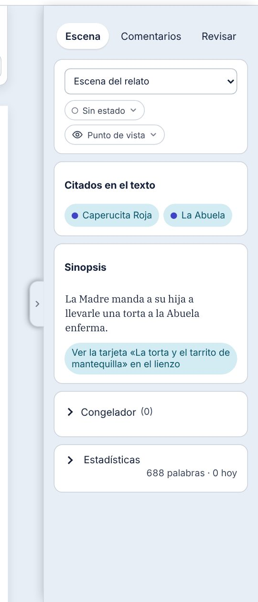
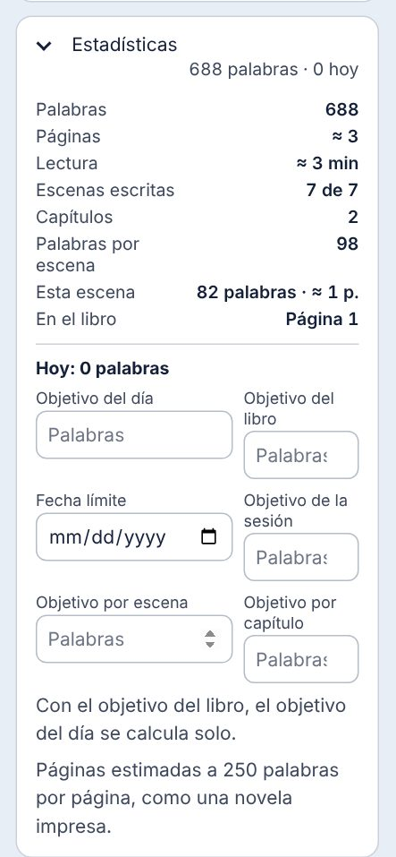
Para crear un personaje o un lugar sin salir de tu frase, escribe / seguido del nombre, en cualquier parte del texto (después de un espacio, un paréntesis o unas comillas): «/Faro de los Buenos Deseos» admite nombres de varias palabras. El menú propone Personaje o Lugar; la tarjeta se crea en segundo plano, el nombre sigue siendo texto normal (no queda ningún enlace en el manuscrito) y sigues escribiendo. Rellenarás la tarjeta más tarde en la Biblia.
Otra manera: selecciona un nombre que ya hayas escrito y escribe /, o toca el botón Personaje o Lugar de la pequeña barra que aparece sobre la selección.
Un pasaje del que dudas no tiene por qué borrarse. Mata a tus darlings sin perderlos: selecciónalo y pulsa Ctrl Mayús K (o, en una pantalla táctil, toca el botón del Congelador en la barra de la selección): sale del texto y va al Congelador de la columna derecha, con la escena de la que viene. Devolver a su sitio lo vuelve a poner exactamente donde estaba; si el texto ha cambiado entretanto, va al lugar más cercano, y al final de la escena en curso si la escena de origen ya no existe. El Congelador se guarda en el proyecto. Un pasaje tiene que estar dentro de una sola escena.
La columna de las escenas y la columna derecha se pliegan: un tirador en el borde de la página las abre y las cierra, y MondoWrite recuerda tu elección. En una pantalla estrecha (iPad en vertical, iPhone) se convierten en cajones sobre la página, cerrados por defecto en un teléfono.
El corrector ortográfico del sistema se ajusta en los Ajustes, Corrector ortográfico: Salvo manuscrito y guion (por defecto: el texto de tus escenas no se subraya mientras escribes), En todas partes o En ninguna parte. En Mac, iPad e iPhone, el sistema subraya las palabras a medida que las escribes o vuelves a ellas: un texto ya escrito no siempre se revisa entero en cuanto se abre. Desmarcar Sugerencias y corrección automática del teclado impide que el teclado del iPad, del iPhone o del Mac te sugiera palabras y corrija tu texto por ti.
El Modo concentración (Ctrl Mayús F) deja solo tu texto, en una columna en el centro de la pantalla, alineado a la izquierda y sin división de palabras, como en iA Writer. En cuanto escribes, la barra superior y el puntero se desvanecen; mueve el ratón (o toca la pantalla) para que vuelvan. Abajo, un pequeño contador vuelve en cada pausa: las palabras de la escena y las escritas durante la sesión.
En la barra, Resaltar pasa por los modos (todo el texto, la frase, la línea, el párrafo), también con Ctrl Mayús E; Máquina de escribir mantiene la línea en curso en el centro de la pantalla. En los Ajustes, eliges el ancho de la columna (estrecha, media, ancha) y, en una computadora, el paso a pantalla completa. Esc sale de él. El Guion tiene el mismo modo concentración, conservando su formato estándar.
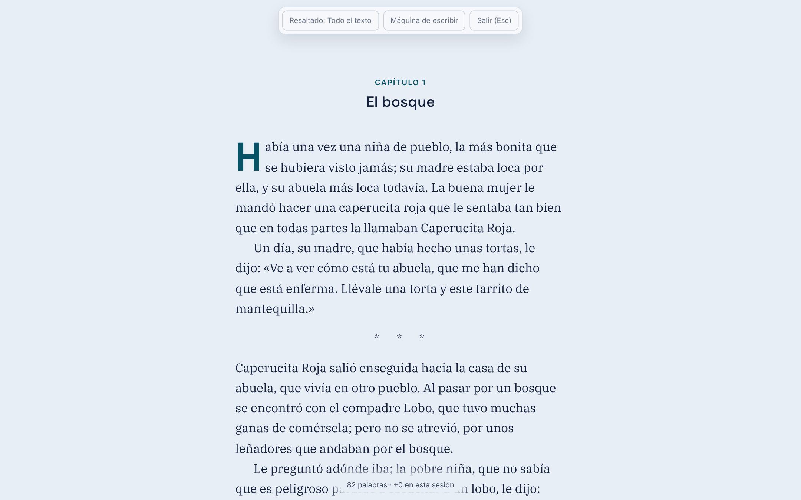
A medida que escribes, MondoWrite pone la tipografía correcta: comillas latinas « », comillas inglesas “ ” en el segundo nivel, puntos suspensivos …, raya a partir de dos guiones, y en francés las « » con sus espacios de no separación. El ajuste Tipografía al escribir decide: seguir el idioma de la interfaz, uno de una veintena de idiomas (alemán „ “, francés « » con espacios, sueco ” ”…) o ninguno. Práctico cuando escribes en otro idioma que el de la interfaz.
Reemplazar (Ctrl Mayús H) busca en todo el texto o en la escena en curso, con o sin las tarjetas. Distinguir mayúsculas y Palabra completa afinan la búsqueda; el número de apariciones se muestra a medida que escribes. La palabra sustituida conserva sus mayúsculas. Deshacer lo devuelve todo a su sitio. Las menciones @ nunca se tocan: ya siguen a su tarjeta. Cada aparición se lista con la frase que la rodea: desmarca las que deban quedarse como están.
Renombrar en todas partes… (menú ⋯ de una tarjeta) solo sustituye el nombre tal como lo escribiste, o en mayúsculas: un personaje llamado Rosa nunca cambia «la rosa del jardín». Si el nombre también es una palabra corriente en tu texto (Luz, Paz, Rosa…), MondoWrite te lo dice y desmarca las apariciones a principio de frase, donde la palabra y el nombre se confunden: léelas antes de renombrar.
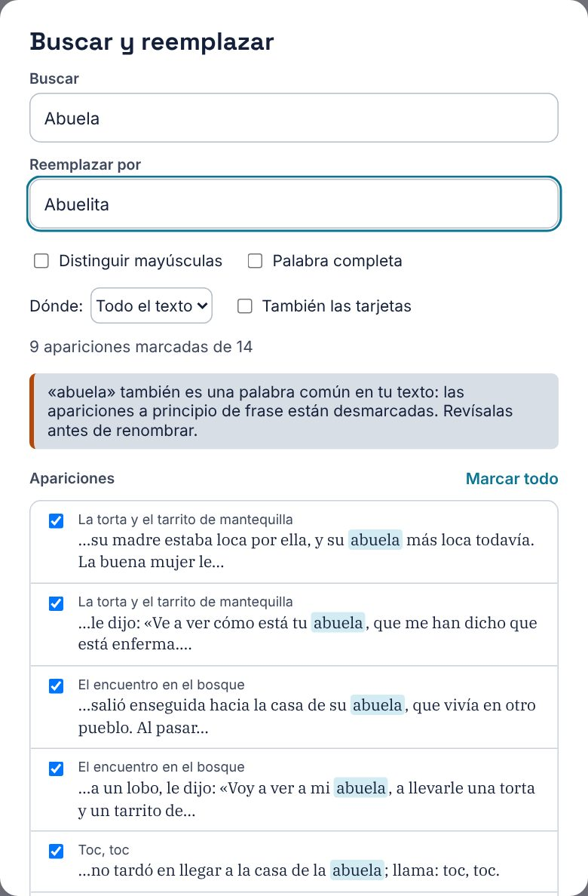
Ir a… (Ctrl G, en el menú ⋯ del Manuscrito y del Guion, y desde cualquier vista) abre una pequeña ventana: escribe un número para ir a esa página, o a la escena con ese número en un guion (al capítulo con ese número en una novela), o una palabra del título de una escena, de un capítulo o de una sinopsis. Los pasajes «por revisar» del manuscrito y las notas [[…]] del guion también están ahí. Intro te lleva al primer lugar encontrado; las flechas eligen otro.
Ir a… lleva a lugares; la paleta lleva a acciones. Ctrl K, en cualquier parte (página de proyectos incluida), abre un campo: escribe el nombre de lo que quieres hacer, organizar, exportar, modo concentración, estadísticas… e Intro lo ejecuta. Las flechas eligen otro comando; el grupo (Archivo, Edición, Visualización…) está a la izquierda y el atajo, si lo hay, a la derecha, para aprenderlo de paso. Solo se ofrecen los comandos posibles donde estás: nada de modo concentración en el lienzo, nada de «Organizar el lienzo» en el Manuscrito. Con el ratón o con el dedo, la paleta se abre desde Todos los comandos…, al pie de la búsqueda (la lupa de la barra superior). Son los mismos comandos que la barra de menús del Mac: en Windows y Linux, es la forma de encontrarlo todo con el teclado.
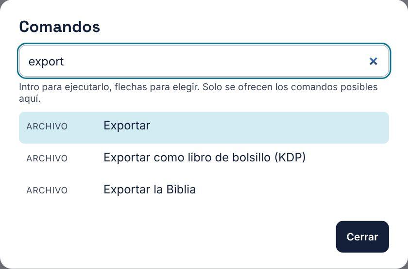
Escuchar lee el texto en voz alta desde donde estás, con las voces instaladas en el dispositivo (nada sale a internet): en un guion, el narrador lee los encabezados, la acción y las transiciones, y cada personaje dice sus réplicas con su propia voz; en una novela, el narrador lo lee todo, hasta el final del libro. El pasaje que se lee se resalta y la página lo sigue. Pausa, Reanudar y Detener sustituyen al botón durante la lectura; escribir en el texto también la detiene.
La flecha junto a Escuchar abre la elección de las voces: la del narrador, la de cada personaje (si no, se le asigna una, siempre la misma), la velocidad y, en un guion, si se leen las acotaciones. Estas elecciones se quedan en el dispositivo, ya que las voces cambian de un dispositivo a otro.
Revisar (en el menú ⋯ de la barra) abre la pestaña del mismo nombre en la columna derecha, junto a En esta escena. No se relee nada mientras la pestaña está cerrada (la escritura sigue fluida); abierta, se actualiza cuando haces una pausa, y entonces el número de puntos encontrados aparece en el menú y en la pestaña. Señala lo que merece una mirada, sin corregir nunca nada: un nombre escrito casi como el de una ficha («Inès» por «Inés»), dos espacios seguidos, un espacio antes de una coma o de un punto, la misma palabra repetida a pocas palabras de distancia en un párrafo (Repeticiones cercanas). Toca un punto para ir al pasaje, seleccionado en el texto. En un manuscrito bastante largo, Palabras más usadas enumera las palabras que más vuelven, sin palabras funcionales ni nombres propios: toca una palabra para ver cada uso en «Buscar y reemplazar». Renombrar en todas partes… abre «Buscar y reemplazar» con el nombre correcto; Ignorar quita el punto de la lista hasta que se cierre la app.
También hace preguntas sobre la historia, nunca errores: el personaje marcado como principal no es el que se ve en más escenas («¿A quién seguimos de verdad?»); un personaje principal no ha rellenado su casilla «Quiere»; una serie todavía no tiene episodios; un secreto no tiene prevista ninguna revelación, o estalla sin ninguna pista sembrada antes; un objeto se nombra en una sola escena (sembrado sin recogerse, o recogido sin sembrarse); una casilla de la plantilla empieza a más de diez puntos de su lugar habitual (a partir de seis escenas, según la cinta del relato: la pregunta lleva a su primera escena). Toca la pregunta para abrir la ficha; Es a propósito la deja de lado.
Estadísticas (en el menú ⋯ de las barras del Manuscrito y del Guion, y en el menú Visualización del Mac) abre una ventana que cuenta, en tu texto, lo que no ves mientras escribes. Allí no se escribe ni se guarda nada.
Cada pestaña tiene su Exportar en CSV…, para una hoja de cálculo.
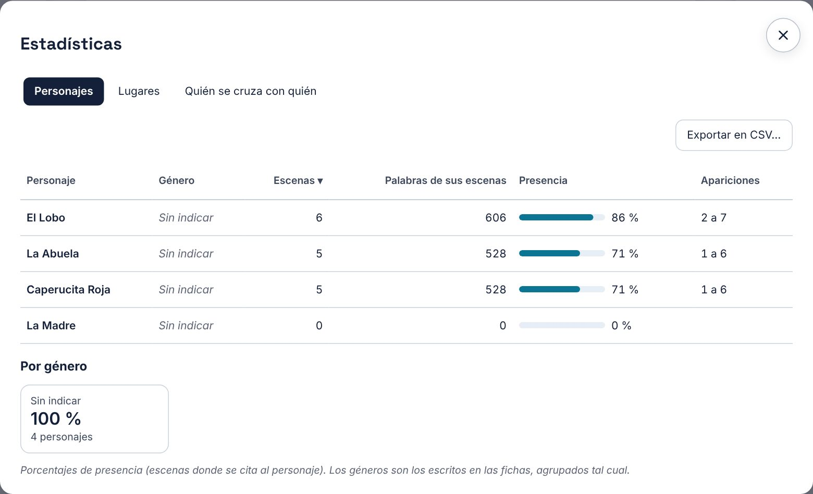
Una tarjeta Escena lleva su texto. En el lienzo, muestra su sinopsis, el principio de su escena y su número de palabras. Ampliada, se convierte en una página donde escribes la escena, la misma que en el Manuscrito; Abrir en el Manuscrito te lleva allí.
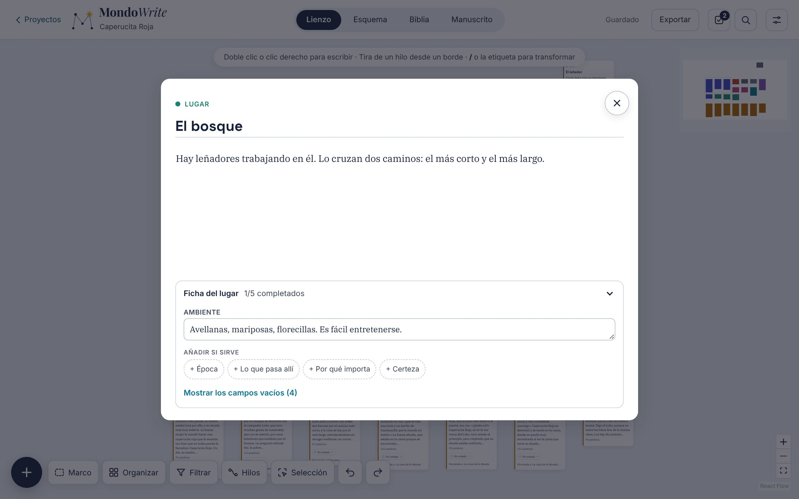
Eliminar una tarjeta Escena nunca elimina su texto. Si una escena ha perdido su tarjeta, aparece en Textos sin tarjeta, al final de la columna: Volver a crear la tarjeta la devuelve al libro.
En un proyecto de guion, el Manuscrito se convierte en la vista Guion: un editor en formato de cine estándar, que guarda el texto en Fountain, un formato abierto que leen Highland, Fade In, WriterSolo, Slugline o Trelby. La Escaleta lista las escenas en el orden del guion.
Crea un proyecto con Un guion, importa un archivo Fountain o Final Draft, o cambia un proyecto existente en Ajustes › Este proyecto › Tipo de proyecto. El vocabulario sigue: los Lugares se llaman Localizaciones, el título de una tarjeta Escena es su encabezado («INT. FARO - NOCHE»), y la extensión se cuenta en páginas y minutos (una página equivale más o menos a un minuto), que se muestran en la vista Guion.
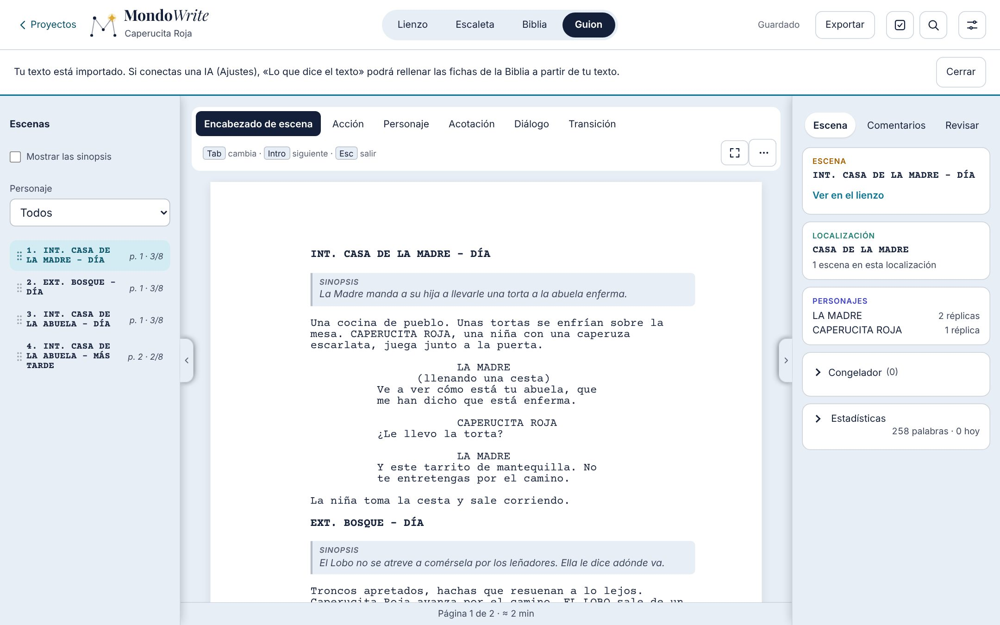
El guion está hecho de elementos: Encabezado de escena, Acción, Personaje, Acotación, Diálogo, Transición. La barra encima de la página muestra el elemento en curso y permite cambiarlo con un clic. Desde el teclado:
En el iPhone, la barra está plegada en la parte superior de la página: solo muestra el tipo del elemento en curso. Tócala para abrir el panel (los seis elementos, luego Modo concentración, Escuchar y el menú ⋯: Congelador, Reemplazar, Ir a…, Revisar); se cierra en cuanto eliges un elemento. La ventana Estadísticas, demasiado ancha para un teléfono, no se propone allí: ábrela en el iPad o en una computadora.
La app reconoce lo que escribes: una línea que empieza por «int.» o «ext.» se convierte en encabezado, un paréntesis bajo un personaje en acotación. El elemento que escribes pasa a mayúsculas cuando hace falta. La página se corta en páginas reales (Carta o A4), con el número de página y la duración abajo.
Mientras escribes un encabezado o un nombre de personaje, MondoWrite propone las localizaciones y los personajes de la Biblia, los momentos del día (DÍA, NOCHE…), las extensiones (V.O., OFF, CONT.). Elige con las flechas e Intro. Un nombre nuevo propone crear su ficha o su localización.
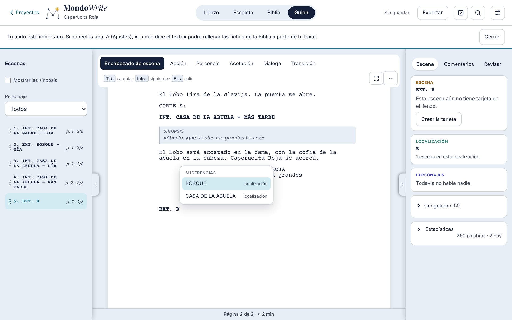
Una escena o un personaje escritos en el guion reciben su tarjeta en el lienzo (con la tarjeta de la localización y el hilo «transcurre en»), sin copiar nada.
A la izquierda, la lista de las escenas con su sinopsis y su página; un clic te lleva a ella. Se reordenan arrastrando su asa (⋮⋮ a la izquierda de cada escena), con sus flechas o Alt ↑ ↓. + Sinopsis añade una sinopsis a la escena (una línea Fountain = …, ignorada al imprimir). A la derecha, En esta escena muestra la tarjeta de la escena, su localización (con el número de escenas que transcurren en ella) y los personajes que hablan, con su número de réplicas. Las dos columnas se pliegan con los tiradores de los bordes de la página, como en el Manuscrito (y se convierten en cajones en una pantalla estrecha).
Al principio de la página, la portada se rellena allí mismo: título, crédito («Escrito por»), autor, fuente, contacto, fecha de la versión. El nombre de tu perfil se pone ahí en cada guion nuevo.
La numeración de las escenas y el subrayado de los encabezados (en pantalla, en el PDF y en la exportación a Final Draft), así como el tamaño de página (Carta o A4), se ajustan en Ajustes › Este proyecto. En la barra, Modo concentración, Escuchar y el menú ⋯ (Congelador, Reemplazar, Ir a…, Revisar, Estadísticas) funcionan como en el Manuscrito.
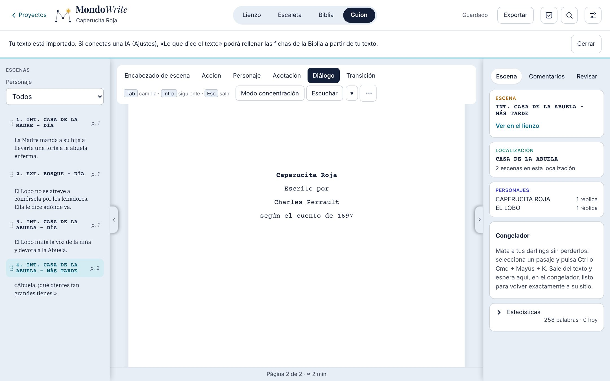
En la columna derecha, después de la escena y del Congelador, Estadísticas (plegado) da las cifras del guion: palabras, páginas (medidas sobre la maquetación del guion), duración, escenas escritas y los objetivos del día y del proyecto. Las palabras escritas en el guion cuentan para el avance del día y los días seguidos, como en el Manuscrito. El Congelador: selecciona un pasaje y pulsa Ctrl Mayús K para apartarlo; Devolver a su sitio lo trae de vuelta.
El Modo concentración deja solo el texto, sin saltos de página, y funciona como en el Manuscrito: barra y puntero ocultos mientras escribes, resaltado con Ctrl Mayús E, máquina de escribir, contador en cada pausa (página, duración y palabras de la sesión). Esc sale de él.
Como en el Manuscrito, Revisar abre una pestaña de cosas que mirar: nombres de personajes casi idénticos («CAPERUSITA» junto a «CAPERUCITA», con el número de réplicas de cada uno), un personaje que habla sin tarjeta (Crear la tarjeta; una errata en un nombre conocido se lista entre los nombres casi idénticos, con Renombrar en todas partes…), una acción de más de 4 líneas, un encabezado sin INT./EXT. o sin momento, un personaje sin réplica, espacios de más, y las preguntas sobre la historia (personaje principal, casilla «Quiere», serie sin episodios, con Episodio nuevo, secretos, objetos, y la extensión del piloto: más o menos una página por minuto, según el formato elegido en la portada, por ejemplo de 27 a 35 páginas para episodios de 30 minutos). Toca un punto para ir al elemento; nada cambia sin ti.
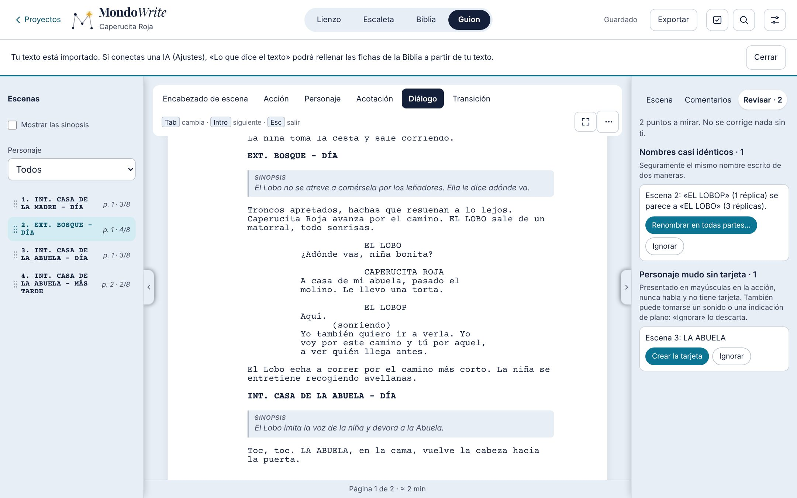
Arriba de la lista de escenas, elige un Personaje: Sus escenas conserva solo las escenas en las que habla o se le nombra en la acción; Sus réplicas atenúa además todo lo que no dice. El texto atenuado sigue siendo editable, y la hoja se vuelve continua mientras el filtro está activo. El aviso de la barra, o Todos, devuelve todo el guion. Desde su ficha en la Biblia, Ver sus réplicas en el guion pone directamente este filtro.
Estadísticas, en el menú ⋯ de la barra, abre la misma ventana que en una novela (ver «Las estadísticas del proyecto»), leída en el guion. La pestaña Localizaciones es un desglose para el rodaje: las páginas de cada localización (una página equivale más o menos a un minuto), sus escenas de interior o exterior, de día o de noche, y los personajes que se cruzan en ella. Ves de un vistazo lo que costará caro (las noches en exterior) o una localización usada una sola vez. Una localización escrita sin tarjeta tiene su propia fila.
En una serie, Contar, arriba de la ventana, limita las cifras a una temporada o a un episodio; Ir a (Ctrl G) propone también cada temporada y cada episodio, con el nombre de su temporada, y lo abre en la vista Guion. Revisar compara la extensión de cada episodio escrito con el formato de la portada (para episodios de 52 minutos, de 47 a 60 páginas) y señala a un personaje principal ausente de tres episodios seguidos o más.
En Quién se cruza con quién, una celda tocada propone también Ver estas escenas en el guion: el filtro conserva entonces solo las escenas donde se cruzan los dos personajes.
La pestaña Int./Ext. y Día/Noche cuenta en todo el guion. Una escena «MÁS TARDE», «CONTINUO» o «MISMO MOMENTO», o sin momento, retoma el día o la noche de la escena anterior: se cuenta como «retomada», sin tocar el texto. Una escena INT./EXT. cuenta a los dos lados.
La escaleta lista las escenas en el orden del guion, con su sinopsis, sus personajes, su extensión y su estado. Arrastra una escena o usa sus flechas para cambiar el orden del propio guion. En cada escena, ↗ muestra su tarjeta en el lienzo y ✎ la abre en el Guion.
El menú Plantilla propone: ninguna, tres actos, Save the Cat, ocho secuencias (la película en ocho secuencias de unos quince minutos), episodio de serie (teaser, cuatro actos, tag) y las estructuras del Esquema (viaje del héroe, círculo de Dan Harmon, pirámide en cinco actos, seis etapas, siete puntos, kishōtenketsu, romántica, novela policíaca), además de tus propias plantillas (ver el Esquema). Las casillas de la plantilla son secciones del archivo Fountain, que los demás programas ven como secciones normales. En la vista Guion, el cursor espera bajo la primera casilla hasta que la sigue una escena, y lo que escribes bajo una casilla empieza un encabezado de escena; coloca las escenas con Colocar en, las flechas o arrastrando. Cada casilla muestra su posición («Casilla 3 de 15»), un título grande, su ayuda y su extensión; tus propias secciones se quedan más pequeñas, bajo las casillas.
Para una serie, + Episodio nuevo (arriba de la escaleta, en cualquier guion que no sea una película) crea el primer episodio bajo una Temporada 1: lo que ya has escrito se convierte en su guion. La escaleta muestra entonces la serie como un árbol, temporada › episodio › escenas. Toca un título para cambiarlo allí mismo, + Sinopsis bajo un episodio para decir en dos o tres frases lo que pasa en él, la flecha para plegar una temporada o un episodio. Cada uno muestra sus páginas. Su menú ⋯ propone Escribir el episodio, Subir, Bajar (un episodio pasa de una temporada a la siguiente) y Quitar: solo se va el título, el texto se une a lo que lo precede. + Temporada nueva añade una al final; Episodio nuevo en esta temporada está en el menú de una temporada. Pasa una escena a otro episodio con Colocar en o las flechas. En la vista Guion, el selector de arriba de la lista de escenas abre Todo el guion o un solo episodio; sus flechas van al anterior o al siguiente. En Todo el guion, la lista de escenas sigue las temporadas y los episodios (un título te lleva allí con un clic) y el texto nombra cada parte: Temporada, Episodio 2, Casilla. La cinta de las casillas solo se muestra con un episodio abierto. Una escena escrita en un episodio se une enseguida a su marco en el lienzo. Todo se queda en scenario.fountain, donde temporadas y episodios son secciones normales para los demás programas. Cada episodio tiene su propia plantilla: Plantilla del episodio, bajo su sinopsis, pone sus casillas solo en el texto de ese episodio (Episodio de serie en cabeza de la lista), tus propias plantillas incluidas (Mis plantillas: crear una, reutilizar una guardada, editar la del episodio); Colocar en las nombra con su episodio, y Organizar las dibuja dentro del marco del episodio.
Ampliada, una tarjeta Escena de un guion muestra su encabezado, su sinopsis y un editor limitado al texto de esa escena, con la misma barra de elementos.
MondoWrite funciona por completo sin IA. Si conectas una, hace preguntas y propuestas; nunca escribe tu texto, y nada cambia sin tu decisión.
En Ajustes › IA (opcional), elige un Servicio:
/v1 también). Si LM Studio pide un token («Require Authentication» en los ajustes de su servidor), crea uno en LM Studio y pégalo en Token de API (opcional).Probar y listar los modelos comprueba la conexión y propone la lista de los modelos disponibles. El botón IA aparece entonces en la barra superior. Si no se ha podido cargar la lista, un mensaje lo dice: vuelve a pulsar el botón para reintentar.
Mientras trabaja, un botón Cancelar la detiene (menú IA, galería, asistente de personaje). La IA siempre nombra las tarjetas por su título. Cuando algo falla, un mensaje dice qué: servicio inalcanzable, clave rechazada, modelo desconocido, límite alcanzado, respuesta que tarda demasiado.
Estas herramientas siguen la regla de siempre: la IA pregunta o propone, siempre con el pasaje de tu texto en el que se apoya, y no entra nada en el proyecto sin tu clic.
Por defecto, la IA de MondoWrite pregunta y propone; no escribe por ti. El modo Taller, que se activa proyecto por proyecto en Ajustes › Este proyecto › Modo Taller, le permite proponer texto. Una etiqueta Taller en la barra superior te lo recuerda.
Todo lo que aceptas recibe un subrayado de puntos, se lista en Pendientes (Pasajes de la IA) y se cuenta en las Estadísticas (Texto tocado por la IA). Cuando has retocado un pasaje, Ya lo he hecho mío quita la marca. Cada propuesta aceptada añade también una línea al archivo ia-journal.md del proyecto (fecha, acción, tarjeta o escena, servicio y modelo, número de palabras): te ayuda a responder a Amazon KDP, que pide declarar el texto generado por IA. Una versión de MondoWrite anterior a la 1.8.0 conserva el texto pero pierde la marca si vuelve a guardar el proyecto.
El botón Exportar fabrica tus archivos dentro de la app, sin herramienta externa. Elige el formato: el archivo se guarda donde decidas.
Las escenas de un mismo capítulo forman un solo capítulo, separadas por «* * *». Las páginas del libro (dedicatoria, prólogo…) están en su lugar.
Libro en rústica (KDP)… prepara tu libro para la impresión bajo demanda (Amazon KDP): un PDF del interior listo para imprimir y una plantilla de cubierta a su medida.
Los ajustes se guardan con el proyecto. En cuanto se abre la ventana, y con cada cambio, el libro se maqueta: la ventana muestra el número de páginas y el ancho del lomo, y avisa si KDP rechazaría el libro (menos de 24 páginas, o demasiadas páginas para ese papel).
Guardar la plantilla de cubierta (PDF) da una página al tamaño exacto de tu cubierta completa (contracubierta, lomo, cubierta), sangrado incluido: el lomo calculado según el número de páginas y el papel, las zonas de seguridad en las que mantener el texto, la zona del código de barras que añade KDP y las medidas escritas encima. Úsala como capa guía en tu programa de diseño y ocúltala antes de exportar tu cubierta. Por debajo de 79 páginas, KDP no acepta texto en el lomo.
Rellena las páginas «Portada», «Créditos», «Dedicatoria» o «Agradecimientos» en el Manuscrito para que sustituyan a las que fabrica MondoWrite. Comprueba siempre el previsualizador de KDP antes de publicar.
La ventana Exportar el guion en PDF muestra la primera página tal como saldrá, actualizada con cada elección:
En una serie, Lo que se exporta elige todo el guion, una temporada o un episodio (por defecto, el episodio abierto en la vista Guion). Como es costumbre, la primera página del texto no lleva número; las siguientes, sí. El PDF da a cada episodio su propia portada (el título del proyecto, la temporada cuando hay varias, luego el episodio) y páginas numeradas desde 1, también para toda la serie o una temporada. Las exportaciones a Fountain y Final Draft siguen la misma elección, en un solo texto.
[[…]], en gris. Todo desmarcado (salvo la portada), es el formato estándar, el que se envía.{date}, {title} y {author} se rellenan al exportar («Versión 3 · {date}»), y una Marca de agua en diagonal («Confidencial»). El número de página se queda arriba a la derecha.Estas elecciones se guardan en el proyecto: la próxima vez, la ventana se abre tal como la dejaste.
Biblia… abre la ventana Exportar la Biblia. Bastan tres preguntas, y la vista previa, a la derecha, muestra el PDF real, página a página, rehecho con cada cambio.
Para otra persona, el documento sigue siendo corto: encima de la vista previa, el número de páginas va seguido de una indicación, «La mayoría de las comisiones esperan de 15 a 20 páginas», nunca de un bloqueo. Por qué este destinatario añade una frase al final de la nota de intenciones («Por qué esta cadena»): guarda un ajuste por destinatario. Tu trayectoria y tus obras (perfil de autor) forman una página «Sobre el autor» al final, precedida de «Por qué yo» para una serie. La voz de los personajes y las notas de escritura se quedan en la biblia de trabajo.
Una biblia de serie recibe además el universo y lo que pasó antes del piloto, lo que mantiene unidos a los personajes, la mecánica, la pregunta de la temporada y dónde termina, los episodios (una lista corta: número, título, hito, sinopsis, personaje central, agrupados por temporada), las temporadas siguientes, las reglas de escritura y, para otra persona, los otros soportes. Los grupos, objetos, acontecimientos y reglas del mundo siguen a los lugares en la parte Universo; los secretos siguen a las tramas en la Estructura. Dos opciones, desmarcadas para una productora: Cuadro de las tramas (qué tramas en qué episodios, o en qué partes del piloto si no hay episodios) y Página «De un vistazo» (las frases gancho de los personajes y los episodios en los que aparece cada uno). Adjuntar las primeras páginas del piloto añade al final las diez primeras páginas del guion, en formato estándar. Para una editorial, Adjuntar las primeras páginas del manuscrito hace lo mismo con tu novela, en formato manuscrito. El aspecto propuesto por defecto es Sobrio para una productora, Editorial para una editorial.
Tus elecciones se guardan con el proyecto. Ajuste las guarda con un nombre («Para mi editora», «Sala de guionistas») para volver a encontrarlas. El archivo lleva la fecha del día («Dosier de presentación - Título - 2026-10-26»): cada envío conserva su versión. Word y Markdown conservan las partes elegidas y su orden, no el aspecto.
El lienzo se exporta como imagen PNG de toda la pizarra, en PDF normal (A4, para enviar) o en gran formato (A1, para imprimir y colgar en la pared), o como texto de las tarjetas (Word, Markdown), una parte por marco.
Un proyecto de MondoWrite es una carpeta normal, llena de archivos de texto que puedes abrir, copiar, respaldar o versionar a tu gusto.
| Archivo o carpeta | Contenido |
|---|---|
cosmos.json | El título, el tipo, la posición de las tarjetas, los hilos, los marcos, el esquema, los objetivos, la portada del proyecto, los ajustes del libro en rústica. |
cartes/ | Una tarjeta por archivo Markdown, con una pequeña cabecera (tipo, título, imagen, ficha). |
manuscrit/ | El texto de cada escena de una novela, en Markdown. |
scenario.fountain | El texto del guion, en Fountain. |
medias/ | Las imágenes y los PDF de las tarjetas. |
corbeille/ | Las tarjetas eliminadas, a la espera de recuperarse o borrarse. |
markdown/ | Copias legibles del manuscrito, de la biblia y del lienzo, con una versión por día. |
Una mención de una tarjeta se escribe como un enlace Markdown normal: [@El Lobo](cosmos:…). Todo sigue siendo legible en cualquier editor de texto (los nombres de las carpetas están en francés, y «cosmos» viene del antiguo nombre de la app).
Después de cada guardado, la app de escritorio escribe en markdown/ el manuscrito, la biblia y el lienzo en Markdown, con enlaces entre las fichas. Cada día se guarda una copia con fecha en markdown/versions/: treinta días, y después una por mes. Estas copias nunca se vuelven a leer: escribe siempre en la app. El ajuste Copias en Markdown en la carpeta del proyecto (Ajustes › Este proyecto) las desactiva.
Un proyecto sigue siendo una carpeta normal: un servicio de sincronización la copia de un dispositivo a otro, y MondoWrite vuelve a cargar los cambios. Elige según tus dispositivos:
| Tus dispositivos | Método recomendado |
|---|---|
| iPhone, iPad y Mac | iCloud Drive, activado por defecto: nada que configurar. |
| Con una PC con Windows o Linux | Una carpeta de Dropbox elegida en cada dispositivo. |
| Un traspaso puntual | Un archivo .zip. |
projets). La casilla Ajustes › Sincronizar los proyectos con iCloud Drive está marcada por defecto en el iPhone y el iPad, y en el Mac en cuanto iCloud Drive contiene esa carpeta. Los proyectos creados en un dispositivo aparecen solos en la página de los proyectos de los demás, sin buscarlos. Cada dispositivo tiene que haber iniciado sesión en la misma cuenta de iCloud, con iCloud Drive activado. Sin iCloud Drive, los proyectos se quedan en el dispositivo y los Ajustes lo dicen. Si más tarde se desactiva iCloud Drive, la página de los proyectos avisa de que los proyectos de iCloud ya no aparecen: no se pierden y vuelven cuando se reactiva. En el Mac, si los proyectos tardan en llegar, Encontrar la carpeta… abre la carpeta MondoWrite de iCloud: elige allí projets. iCloud a veces crea un duplicado «projets 2» cuando dos dispositivos crean esa carpeta a la vez: la página de los proyectos lo dice, y Volver a ponerlos con los demás traslada sus proyectos a projets.OneDrive no sirve para sincronizar con un iPhone o un iPad: iOS no deja que una app elija una carpeta de OneDrive (aparece en gris en el selector). En una computadora, una carpeta de OneDrive funciona como carpeta en la nube, pero solo entre computadoras. Para unir una PC y un iPhone, usa Dropbox.
En el iPhone y el iPad, la app vuelve a cargar el proyecto abierto cada 20 segundos y cuando vuelves a él. En una computadora, ve los cambios en cuanto llegan a la carpeta.
No escribas en dos dispositivos a la vez: la sincronización a veces tarda unos segundos. Si el mismo archivo ha cambiado en los dos lados, la app conserva las dos versiones y te deja elegir.
Para eliminar un proyecto de todos tus dispositivos: en el iPhone y el iPad, Eliminar el proyecto… en el menú ⋯ de la página de los proyectos; en una computadora, mueve su carpeta a la papelera (en el Finder: iCloud Drive › MondoWrite › projets).
Puedes editar un archivo del proyecto con otro programa, o desde otra computadora a través de una carpeta sincronizada. La app se da cuenta y retoma la versión nueva. Si el mismo archivo ha cambiado en los dos lados, no se sobrescribe ninguno: se conserva la versión del disco, la tuya se guarda al lado («… (MondoWrite).md») y un aviso te deja elegir: Esta o La otra (La de iCloud para un proyecto de iCloud).
En la app (ordenador, iPhone, iPad), MondoWrite guarda una copia de cada proyecto aparte, en su propia carpeta del dispositivo, nunca en la del proyecto: si esa carpeta se daña, se borra o se sincroniza mal, las copias siguen ahí. Se hace una copia después de un guardado, como mucho cada 30 minutos mientras escribes; MondoWrite guarda las 5 últimas y luego la última de cada día durante 30 días. Contiene los textos, la papelera y las versiones de las escenas; las imágenes se guardan una sola vez, al lado.
Ajustes › Este proyecto › Copias de seguridad… muestra las copias del proyecto abierto, con su fecha, y Hacer una copia ahora. La página de proyectos también tiene un botón Copias de seguridad…, que muestra las de todos los proyectos, incluso de uno cuya carpeta ha desaparecido (en Mac: Archivo › Copias de seguridad…). Abrir esta copia la abre como un proyecto nuevo, con la fecha de la copia tras el título: el proyecto actual no cambia. Así recuperas un lienzo, una biblia o un plan de antes; para el texto de una sola escena, bastan sus versiones.
Un mensaje bajo la barra superior dice por qué (disco lleno, permisos insuficientes, carpeta no encontrada) y propone: Reintentar; Indicar la carpeta del proyecto… si se ha movido o renombrado; Exportar una copia… (todo el proyecto en un archivo .zip, para no perder nada); o Volver a los proyectos sin guardar.
Las copias automáticas se quedan en el dispositivo: guarda también tus proyectos en una carpeta sincronizada (iCloud Drive, Dropbox, OneDrive) o cópialos en otro sitio de vez en cuando. Como son archivos de texto, ocupan muy poco espacio.
El botón Ajustes (los controles deslizantes, arriba a la derecha) abre cuatro pestañas: Este proyecto (cuando hay un proyecto abierto), General, Escritura e IA.
| Ajuste | Efecto |
|---|---|
| Este proyecto | Tipo de proyecto (novela o guion); para un guion, el tamaño de página y las opciones de numeración; las copias en Markdown; la Papelera; las Copias de seguridad…. |
| Idioma | Español, francés, inglés y los idiomas traducidos por la comunidad. La primera vez, el idioma del sistema. Traducir MondoWrite a tu idioma abre la guía de los traductores. |
| Apariencia | Como el sistema, clara u oscura. |
| Tipografía al escribir | Seguir el idioma de la interfaz, un idioma a tu elección, o ninguno. |
| Corrector ortográfico | Salvo manuscrito y guion (a petición), en todas partes o en ninguna parte. |
| Sugerencias y corrección automática del teclado | Palabras propuestas y corregidas por el teclado del sistema, o ninguna. |
| Nombre de autor | Se lee en tu perfil; Editar mi perfil… abre la ventana Tú, el autor. |
| Fotos libres | Las claves de Pixabay y Unsplash (Openverse no necesita ninguna). |
| IA | El servicio, la clave o la dirección, el modelo. |
| Actualizaciones | La comprobación al iniciar y el botón de comprobación (app de escritorio). |
Al final: Visita guiada, Guía del usuario (esta guía, abierta en tu navegador), Atajos de teclado y Acerca de MondoWrite. La guía también se abre en cualquier parte con F1, directamente en el capítulo de la vista en la que estás, y, en un Mac, desde el menú Ayuda de la barra de menús, que sigue el idioma de la app. En un Mac, cada orden de la interfaz tiene también allí su lugar: Formato (negrita, cursiva, tachado, «por revisar»), Visualización (paneles, modo concentración, resaltado) y Lienzo (tarjeta nueva, marco nuevo, organizar, hilos). Windows y Linux no tienen barra de menús: todo se queda en la interfaz y en el teclado, y la paleta de comandos (Ctrl K) lo reúne. El idioma, la apariencia, las claves y el perfil son ajustes del dispositivo; el tipo de proyecto y los ajustes del libro en rústica se guardan en el proyecto.
Toda la app existe en oscuro, hasta la página del manuscrito. Elige Oscura, o Como el sistema para seguir a tu computadora.
En una pantalla táctil, todo funciona con el dedo: una pulsación larga en una tarjeta la levanta (queda seleccionada, con una sombra) para que puedas moverla, una pulsación larga dentro de un marco no bloqueado levanta el marco con sus tarjetas, tocar la etiqueta de una tarjeta cambia su tipo, el botón Selección permite rodear tarjetas, y cada acción de arrastrar y soltar tiene también un botón.
En un teléfono, las cuatro vistas son pestañas en la parte inferior de la pantalla, al alcance del pulgar: Lienzo, Esquema, Manuscrito y Biblia (Escaleta y Guion para un guion). Las exportaciones y el orden de las secciones de la Biblia se quedan en el iPad y en la computadora, donde tienen sitio. Decide el ancho de la pantalla: un iPhone plegable abierto, o una ventana más ancha, recupera la disposición del iPad.
En el lienzo, con dos dedos te desplazas y haces zoom. El + abre la lista de tipos: elige uno, y la tarjeta nueva se abre enseguida en pantalla completa, con el título listo para lo que escribas; la tecla de retorno del teclado pasa al texto. Ciérrala con la cruz: la tarjeta está en su sitio en el lienzo, en la Biblia y en tus otros dispositivos. Una tarjeta que ya existe se abre en grande con su botón Ampliar la tarjeta.
En el Manuscrito y en el Guion, separa dos dedos sobre la página, como para ampliar: entras en el Modo concentración; júntalos para salir. Un deslizamiento rápido de un dedo hacia la derecha abre el panel de las escenas, hacia la izquierda el panel derecho; el mismo gesto en sentido contrario cierra el panel abierto. En la Biblia, abre y cierra el índice. Estos gestos también funcionan en el iPad; las asas del borde de la pantalla siguen ahí si prefieres tocar.
Las notas tomadas con la Libreta de una versión anterior siguen siendo tarjetas «por ordenar»: Por ordenar · N, en el lienzo, las lista, con un punteado alrededor de cada una; en cuanto mueves una o la unes a otra tarjeta, sale de la lista.
La lista completa se abre en cualquier momento con Ctrl /. En un Mac, Ctrl se convierte en ⌘ y Alt en ⌥.
| Ctrl / | La lista de los atajos |
| Ctrl 1 … 4 | Lienzo, Esquema, Biblia, Manuscrito |
| Ctrl F | Buscar una tarjeta o un pasaje |
| Ctrl + − 0 | Zoom de la página (Manuscrito, Guion): ampliar, reducir, tamaño normal |
| Ctrl Mayús H | Buscar y reemplazar en el texto |
| Ctrl G | Ir a una página, una escena, un capítulo |
| Ctrl K | Paleta de comandos: ejecutar una acción por su nombre |
| Ctrl Mayús L | Pendientes |
| Ctrl S | Guardar |
| Ctrl Z · Ctrl Mayús Z | Deshacer · Rehacer |
| N | Tarjeta nueva |
| C | Marco nuevo (alrededor de la selección) |
| / | Cambiar el tipo (al principio de una línea, o en un título vacío) |
| @ o [[ | Mencionar otra tarjeta |
| Ctrl Intro | Ampliar la tarjeta seleccionada |
| Alt ← → | Ensanchar o estrechar la tarjeta |
| Mayús + arrastrar | Rodear varias tarjetas |
| Ctrl + clic | Añadir una tarjeta a la selección |
| Ctrl A · Esc | Seleccionar todo · Deseleccionar todo |
| Supr | Mover la selección a la papelera |
| Ctrl C · Ctrl V | Copiar las tarjetas seleccionadas · Pegar tarjetas, un enlace, una imagen o un texto (en la tarjeta que tiene el foco) |
| Ctrl D | Duplicar las tarjetas seleccionadas |
| Ctrl B · Ctrl I | Negrita · Cursiva |
| Ctrl Mayús D | Tachado |
| Ctrl Alt 1 … 3 | Título, subtítulo |
| Ctrl Mayús 8 · 7 | Lista con viñetas · Lista numerada |
| Ctrl Mayús 9 | Casilla |
| Ctrl Mayús B | Cita |
| Ctrl Mayús X | Marcar «por revisar» |
| ** * # - [ ] | Markdown al escribir y al pegar |
| Intro Intro | Dividir la escena (en una línea vacía) |
| Intro Intro Intro | Capítulo nuevo |
| / + nombre | Crear una tarjeta de personaje o de lugar (o selecciona un nombre y luego /) |
| Ctrl Mayús K | Enviar el pasaje seleccionado al Congelador |
| Ctrl Mayús F · Esc | Modo concentración · Salir de él |
| Ctrl Mayús E | Modo concentración: cambiar el resaltado |
| Alt ↑ ↓ | Mover la escena (columna de las escenas) |
| Tab · Mayús Tab | Cambiar de elemento |
| Intro | Elemento siguiente |
| Esc | Barra de elementos (o salir del modo concentración) |
| Ctrl Mayús K | Enviar el pasaje seleccionado al Congelador |
| Alt ↑ ↓ | Mover la escena (columna de las escenas) |
En la carpeta que elegiste al crear el proyecto. La ruta no se muestra en la app: encuéntrala con Abrir una carpeta…, o busca en tu computadora el archivo cosmos.json.
Elige la misma carpeta en la nube (Dropbox, iCloud Drive u OneDrive) en las dos computadoras con Elegir una carpeta en la nube…: sus proyectos aparecen en los dos lados. Entre dos Mac, iCloud lo hace solo. Ver «Sincronizar entre dispositivos». Evita escribir en las dos a la vez: si un archivo cambia en los dos lados, la app conserva las dos versiones y te deja elegir.
Ctrl Z, o el botón Deshacer del mensaje, o Ajustes › Papelera › Recuperar. El texto de una escena nunca se borra con su tarjeta.
Ajustes › Este proyecto › Tipo de proyecto. Las tarjetas, la Biblia y los archivos no cambian. La primera vez, las escenas se convierten en encabezados del guion y su sinopsis las acompaña; el texto en prosa se queda en el manuscrito, disponible si vuelves a la novela.
KDP exige al menos 24 páginas. Un formato más pequeño (5 × 8) o un índice y unas páginas finales añaden algunas páginas; si no, el texto es simplemente demasiado corto para un libro en rústica.
Para Ollama o LM Studio, comprueba que el programa está abierto y que hay un modelo cargado, y luego Probar y listar los modelos. Para un servicio en línea, comprueba la clave de API y tu saldo. El mensaje de error dice qué es lo que bloquea. En LM Studio, carga el modelo con un «Context Length» de al menos 16.384 para las relecturas y la coherencia: con 4.096 u 8.192, MondoWrite envía paquetes más pequeños, y una petición que no cabe se rechaza con un mensaje que lo dice. Con un modelo que razona (GPT-5, o3…), MondoWrite le pide que razone poco; si sigue sin devolver nada, elige uno más ligero (GPT-5 mini).
El modelo elegido tiene que saber leer imágenes (por ejemplo gemma3, qwen2.5vl o llava con Ollama).
Ajustes › Acerca de MondoWrite › Informar de un error (en un Mac, también en el menú Ayuda). Se abre una página de GitHub con un mensaje ya rellenado: tu versión, tu sistema, tu idioma, el tipo de proyecto y los últimos errores que ha detectado la app. Describe lo que ha pasado y cómo reproducirlo, y luego envíalo (hace falta una cuenta gratuita de GitHub). No se envía nada sin ti, y ni tu texto ni tus claves están en el mensaje.
Sí. MondoWrite es software libre (licencia GNU AGPL 3.0 o posterior): puedes usarlo, estudiarlo, modificarlo y compartirlo. El código fuente está en github.com/sebastienpiconnier/MondoWrite. Se inspira, entre otros, en NEO, el programa de escritura de Hugh Howey.